Ensemble 1: constraint spacing vs regional field strength¶
*with density estimation
This notebooks performs 100 synthetic inversions, with all combinations of 10 values of constraint (bathymetry point measurement) spacing, and 10 values of the strength (standard deviation) of the regional component of the gravity field. For each inversion, we estimate the optimal density contrast value for the seafloor with a cross-validation of the constraint points.
import packages
[1]:
%load_ext autoreload
%autoreload 2
import copy
import itertools
import logging
import os
import pathlib
import pickle
import shutil
import matplotlib.pyplot as plt
import numpy as np
import pandas as pd
import scipy as sp
import verde as vd
import xarray as xr
import xrft
from invert4geom import inversion, optimization, plotting, utils
from polartoolkit import maps
from polartoolkit import utils as polar_utils
from tqdm.autonotebook import tqdm
import synthetic_bathymetry_inversion.plotting as synth_plotting
from synthetic_bathymetry_inversion import synthetic
os.environ["POLARTOOLKIT_HEMISPHERE"] = "south"
logging.getLogger().setLevel(logging.INFO)
/home/mdtanker/miniforge3/envs/synthetic_bathymetry_inversion/lib/python3.12/site-packages/UQpy/__init__.py:6: UserWarning:
pkg_resources is deprecated as an API. See https://setuptools.pypa.io/en/latest/pkg_resources.html. The pkg_resources package is slated for removal as early as 2025-11-30. Refrain from using this package or pin to Setuptools<81.
[2]:
ensemble_path = "../results/Ross_Sea/ensembles/Ross_Sea_ensemble_01_constraint_spacing_vs_regional_strength_density_estimation"
ensemble_fname = f"{ensemble_path}.csv"
[3]:
# set grid parameters
spacing = 2e3
inversion_region = (-40e3, 110e3, -1600e3, -1400e3)
true_density_contrast = 1476
bathymetry, basement, original_grav_df = synthetic.load_synthetic_model(
spacing=spacing,
inversion_region=inversion_region,
buffer=spacing * 10,
basement=True,
zref=0,
bathymetry_density_contrast=true_density_contrast,
)
buffer_region = polar_utils.get_grid_info(bathymetry)[1]
inversion_area = (
(inversion_region[1] - inversion_region[0])
/ 1e3
* (inversion_region[3] - inversion_region[2])
/ 1e3
)
inside_bathymetry = bathymetry.sel(
easting=slice(inversion_region[0], inversion_region[1]),
northing=slice(inversion_region[2], inversion_region[3]),
)
inversion_area
requested spacing (2000.0) is smaller than the original (5000.0).
requested spacing (2000.0) is smaller than the original (5000.0).
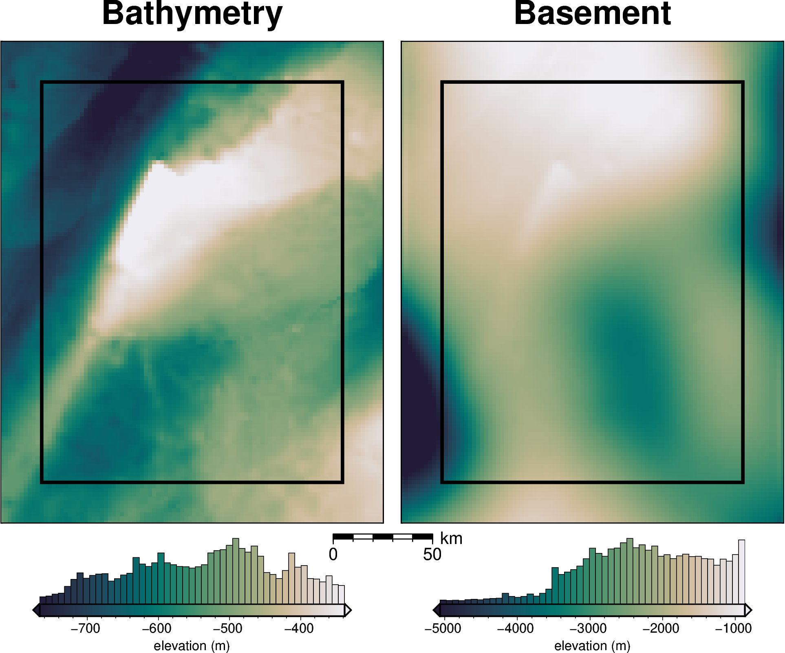
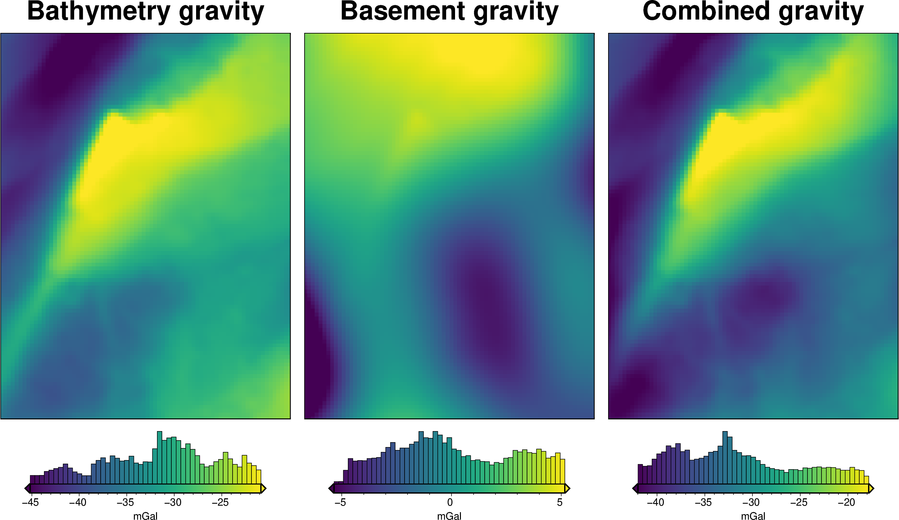
[3]:
30000.0
[4]:
# normalize regional gravity between 0 and 1
original_grav_df["basement_grav_normalized"] = (
vd.grid_to_table(
utils.normalize_xarray(
original_grav_df.set_index(["northing", "easting"])
.to_xarray()
.basement_grav,
low=-1,
high=1,
)
)
.reset_index()
.basement_grav
)
original_grav_df = original_grav_df.drop(
columns=["basement_grav", "disturbance", "gravity_anomaly"]
)
original_grav_df
[4]:
| northing | easting | upward | bathymetry_grav | basement_grav_normalized | |
|---|---|---|---|---|---|
| 0 | -1600000.0 | -40000.0 | 1000.0 | -35.551085 | -0.575645 |
| 1 | -1600000.0 | -38000.0 | 1000.0 | -36.054683 | -0.523223 |
| 2 | -1600000.0 | -36000.0 | 1000.0 | -36.473168 | -0.466365 |
| 3 | -1600000.0 | -34000.0 | 1000.0 | -36.755627 | -0.406022 |
| 4 | -1600000.0 | -32000.0 | 1000.0 | -36.951045 | -0.343163 |
| ... | ... | ... | ... | ... | ... |
| 7671 | -1400000.0 | 102000.0 | 1000.0 | -25.760090 | 0.399167 |
| 7672 | -1400000.0 | 104000.0 | 1000.0 | -25.911429 | 0.334798 |
| 7673 | -1400000.0 | 106000.0 | 1000.0 | -26.032814 | 0.268741 |
| 7674 | -1400000.0 | 108000.0 | 1000.0 | -26.121903 | 0.201716 |
| 7675 | -1400000.0 | 110000.0 | 1000.0 | -26.206160 | 0.134418 |
7676 rows × 5 columns
[5]:
num = 10
# Define total number of constraints
constraint_numbers = [
round(x) for x in np.geomspace(4, 650, num)
] # -> median distance of 17.7-2.5 km, log scale, w/ border
constraint_numbers = [round(i) for i in constraint_numbers]
assert len(pd.Series(constraint_numbers).unique()) == num
# Define regional strength
regional_strengths = [float(round(x, 2)) for x in np.linspace(20, 200, num)]
print("number of constraints:", constraint_numbers)
print("regional strengths:", regional_strengths)
number of constraints: [4, 7, 12, 22, 38, 68, 119, 210, 369, 650]
regional strengths: [20.0, 40.0, 60.0, 80.0, 100.0, 120.0, 140.0, 160.0, 180.0, 200.0]
[6]:
# turn into dataframe
sampled_params_df = pd.DataFrame(
itertools.product(
constraint_numbers,
regional_strengths,
),
columns=[
"constraint_numbers",
"regional_strengths",
],
)
sampled_params_dict = dict(
constraint_numbers=dict(sampled_values=sampled_params_df.constraint_numbers),
regional_strengths=dict(sampled_values=sampled_params_df.regional_strengths),
)
plotting.plot_latin_hypercube(
sampled_params_dict,
)
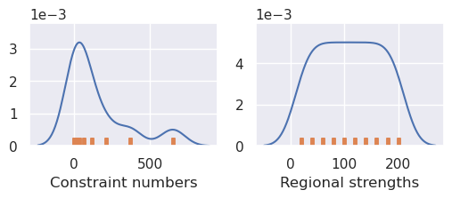
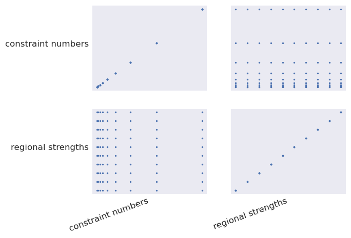
[7]:
sampled_params_df.dtypes
[7]:
constraint_numbers int64
regional_strengths float64
dtype: object
Create starting models and constraints¶
Only need to do this for unique combinations of constraint_numbers and constraint_noise_levels
[8]:
starting_topography_kwargs = dict(
method="splines",
region=buffer_region,
spacing=spacing,
dampings=None,
)
# get high res grid for computing constraint spacing
bathymetry_highres, _, _ = synthetic.load_synthetic_model(
spacing=500,
just_topography=True,
)
# clip to inversion region
bathymetry_highres = bathymetry_highres.sel(
easting=slice(inversion_region[0], inversion_region[1]),
northing=slice(inversion_region[2], inversion_region[3]),
)
requested spacing (500.0) is smaller than the original (5000.0).
[ ]:
sampled_params_df["constraint_points_fname"] = np.nan
sampled_params_df["starting_bathymetry_fname"] = np.nan
# sampled_params_df["starting_prisms_fname"] = np.nan
for i, row in tqdm(sampled_params_df.iterrows(), total=len(sampled_params_df)):
# check if constraint spacing is already done
# if so, copy it
subset_with_same_params = sampled_params_df[
sampled_params_df.constraint_numbers == row.constraint_numbers
]
if (len(subset_with_same_params) > 1) & (
pd.notna(subset_with_same_params.constraint_points_fname.iloc[0])
):
# copy and rename files
shutil.copy(
subset_with_same_params.constraint_points_fname.iloc[0],
f"{ensemble_path}_constraint_points_{i}.csv",
)
shutil.copy(
subset_with_same_params.starting_bathymetry_fname.iloc[0],
f"{ensemble_path}_starting_bathymetry_{i}.nc",
)
# shutil.copy(
# subset_with_same_params.starting_prisms_fname.iloc[0],
# f"{ensemble_path}_starting_prisms_{i}.nc",
# )
# copy other columns
sampled_params_df.loc[i, "constraints_starting_rmse"] = (
subset_with_same_params.constraints_starting_rmse.iloc[0]
)
print("skipping and using already created data")
else:
# make constraint points
constraint_points = synthetic.constraint_layout_number(
num_constraints=row.constraint_numbers,
region=inversion_region,
padding=-spacing,
# plot=True,
seed=10,
shapefile="../results/Ross_Sea/Ross_Sea_outline.shp",
add_outside_points=True,
grid_spacing=spacing,
)
# sample true topography at these points
constraint_points = utils.sample_grids(
constraint_points,
bathymetry,
"true_upward",
coord_names=("easting", "northing"),
)
constraint_points["upward"] = constraint_points.true_upward
# grid the sampled values using verde
starting_bathymetry = utils.create_topography(
constraints_df=constraint_points,
**starting_topography_kwargs,
)
# sample the inverted topography at the constraint points
constraint_points = utils.sample_grids(
constraint_points,
starting_bathymetry,
"starting_bathymetry",
coord_names=("easting", "northing"),
)
constraints_rmse = utils.rmse(
constraint_points.true_upward - constraint_points.starting_bathymetry
)
zref = 0
sampled_params_df.loc[i, "constraints_starting_rmse"] = constraints_rmse
starting_bathymetry.attrs["damping"] = None
# save to files
constraint_points.to_csv(
f"{ensemble_path}_constraint_points_{i}.csv", index=False
)
starting_bathymetry.drop_attrs().to_netcdf(
f"{ensemble_path}_starting_bathymetry_{i}.nc"
)
# starting_prisms.to_netcdf(f"{ensemble_path}_starting_prisms_{i}.nc")
# set file names, add to dataframe
sampled_params_df.loc[i, "constraint_points_fname"] = (
f"{ensemble_path}_constraint_points_{i}.csv"
)
sampled_params_df.loc[i, "starting_bathymetry_fname"] = (
f"{ensemble_path}_starting_bathymetry_{i}.nc"
)
# sampled_params_df.loc[i, "starting_prisms_fname"] = (
# f"{ensemble_path}_starting_prisms_{i}.nc"
# )
sampled_params_df
skipping and using already created data
skipping and using already created data
skipping and using already created data
skipping and using already created data
skipping and using already created data
skipping and using already created data
skipping and using already created data
skipping and using already created data
skipping and using already created data
skipping and using already created data
skipping and using already created data
skipping and using already created data
skipping and using already created data
skipping and using already created data
skipping and using already created data
skipping and using already created data
skipping and using already created data
skipping and using already created data
skipping and using already created data
skipping and using already created data
skipping and using already created data
skipping and using already created data
skipping and using already created data
skipping and using already created data
skipping and using already created data
skipping and using already created data
skipping and using already created data
skipping and using already created data
skipping and using already created data
skipping and using already created data
skipping and using already created data
skipping and using already created data
skipping and using already created data
skipping and using already created data
skipping and using already created data
skipping and using already created data
skipping and using already created data
skipping and using already created data
skipping and using already created data
skipping and using already created data
skipping and using already created data
skipping and using already created data
skipping and using already created data
skipping and using already created data
skipping and using already created data
skipping and using already created data
skipping and using already created data
skipping and using already created data
skipping and using already created data
skipping and using already created data
skipping and using already created data
skipping and using already created data
skipping and using already created data
skipping and using already created data
skipping and using already created data
skipping and using already created data
skipping and using already created data
skipping and using already created data
skipping and using already created data
skipping and using already created data
skipping and using already created data
skipping and using already created data
skipping and using already created data
skipping and using already created data
skipping and using already created data
skipping and using already created data
skipping and using already created data
skipping and using already created data
skipping and using already created data
skipping and using already created data
skipping and using already created data
skipping and using already created data
skipping and using already created data
skipping and using already created data
skipping and using already created data
skipping and using already created data
skipping and using already created data
skipping and using already created data
skipping and using already created data
skipping and using already created data
skipping and using already created data
skipping and using already created data
skipping and using already created data
skipping and using already created data
skipping and using already created data
skipping and using already created data
skipping and using already created data
skipping and using already created data
skipping and using already created data
skipping and using already created data
| constraint_numbers | regional_strengths | constraint_points_fname | starting_bathymetry_fname | constraints_starting_rmse | |
|---|---|---|---|---|---|
| 0 | 4 | 20.0 | ../results/Ross_Sea/ensembles/Ross_Sea_ensembl... | ../results/Ross_Sea/ensembles/Ross_Sea_ensembl... | 0.00356 |
| 1 | 4 | 40.0 | ../results/Ross_Sea/ensembles/Ross_Sea_ensembl... | ../results/Ross_Sea/ensembles/Ross_Sea_ensembl... | 0.00356 |
| 2 | 4 | 60.0 | ../results/Ross_Sea/ensembles/Ross_Sea_ensembl... | ../results/Ross_Sea/ensembles/Ross_Sea_ensembl... | 0.00356 |
| 3 | 4 | 80.0 | ../results/Ross_Sea/ensembles/Ross_Sea_ensembl... | ../results/Ross_Sea/ensembles/Ross_Sea_ensembl... | 0.00356 |
| 4 | 4 | 100.0 | ../results/Ross_Sea/ensembles/Ross_Sea_ensembl... | ../results/Ross_Sea/ensembles/Ross_Sea_ensembl... | 0.00356 |
| ... | ... | ... | ... | ... | ... |
| 95 | 650 | 120.0 | ../results/Ross_Sea/ensembles/Ross_Sea_ensembl... | ../results/Ross_Sea/ensembles/Ross_Sea_ensembl... | 0.28303 |
| 96 | 650 | 140.0 | ../results/Ross_Sea/ensembles/Ross_Sea_ensembl... | ../results/Ross_Sea/ensembles/Ross_Sea_ensembl... | 0.28303 |
| 97 | 650 | 160.0 | ../results/Ross_Sea/ensembles/Ross_Sea_ensembl... | ../results/Ross_Sea/ensembles/Ross_Sea_ensembl... | 0.28303 |
| 98 | 650 | 180.0 | ../results/Ross_Sea/ensembles/Ross_Sea_ensembl... | ../results/Ross_Sea/ensembles/Ross_Sea_ensembl... | 0.28303 |
| 99 | 650 | 200.0 | ../results/Ross_Sea/ensembles/Ross_Sea_ensembl... | ../results/Ross_Sea/ensembles/Ross_Sea_ensembl... | 0.28303 |
100 rows × 5 columns
[10]:
for i, row in tqdm(sampled_params_df.iterrows(), total=len(sampled_params_df)):
# load data
constraint_points = pd.read_csv(row.constraint_points_fname)
# calculate min dist between each grid cell and nearest constraint
coords = vd.grid_coordinates(
region=inversion_region,
spacing=100,
)
grid = vd.make_xarray_grid(coords, np.ones_like(coords[0]), data_names="z").z
min_dist = utils.dist_nearest_points(
constraint_points,
grid,
).min_dist
# mask to the ice shelf outline
min_dist = polar_utils.mask_from_shp(
shapefile="../results/Ross_Sea/Ross_Sea_outline.shp",
grid=min_dist,
invert=False,
masked=True,
)
# calculate average constraint spacing
# constraint_spacing = (
# np.median(
# vd.median_distance(
# (constraint_points.easting, constraint_points.northing),
# k_nearest=1,
# )
# )
# / 1e3
# )
constraint_proximity = int(min_dist.median().to_numpy()) / 1e3
sampled_params_df.loc[i, "median_proximity"] = constraint_proximity
sampled_params_df.loc[i, "maximum_constraint_proximity"] = (
int(min_dist.max().to_numpy()) / 1e3
)
sampled_params_df.loc[i, "constraint_proximity_skewness"] = sp.stats.skew(
min_dist.to_numpy().ravel(), nan_policy="omit"
)
sampled_params_df.loc[i, "constraints_per_10000sq_km"] = (
len(constraint_points) / inversion_area
) * 10e3
sampled_params_df
[10]:
| constraint_numbers | regional_strengths | constraint_points_fname | starting_bathymetry_fname | constraints_starting_rmse | median_proximity | maximum_constraint_proximity | constraint_proximity_skewness | constraints_per_10000sq_km | |
|---|---|---|---|---|---|---|---|---|---|
| 0 | 4 | 20.0 | ../results/Ross_Sea/ensembles/Ross_Sea_ensembl... | ../results/Ross_Sea/ensembles/Ross_Sea_ensembl... | 0.00356 | 17.755 | 51.305 | 0.483691 | 282.666667 |
| 1 | 4 | 40.0 | ../results/Ross_Sea/ensembles/Ross_Sea_ensembl... | ../results/Ross_Sea/ensembles/Ross_Sea_ensembl... | 0.00356 | 17.755 | 51.305 | 0.483691 | 282.666667 |
| 2 | 4 | 60.0 | ../results/Ross_Sea/ensembles/Ross_Sea_ensembl... | ../results/Ross_Sea/ensembles/Ross_Sea_ensembl... | 0.00356 | 17.755 | 51.305 | 0.483691 | 282.666667 |
| 3 | 4 | 80.0 | ../results/Ross_Sea/ensembles/Ross_Sea_ensembl... | ../results/Ross_Sea/ensembles/Ross_Sea_ensembl... | 0.00356 | 17.755 | 51.305 | 0.483691 | 282.666667 |
| 4 | 4 | 100.0 | ../results/Ross_Sea/ensembles/Ross_Sea_ensembl... | ../results/Ross_Sea/ensembles/Ross_Sea_ensembl... | 0.00356 | 17.755 | 51.305 | 0.483691 | 282.666667 |
| ... | ... | ... | ... | ... | ... | ... | ... | ... | ... |
| 95 | 650 | 120.0 | ../results/Ross_Sea/ensembles/Ross_Sea_ensembl... | ../results/Ross_Sea/ensembles/Ross_Sea_ensembl... | 0.28303 | 2.520 | 6.333 | -0.144477 | 496.666667 |
| 96 | 650 | 140.0 | ../results/Ross_Sea/ensembles/Ross_Sea_ensembl... | ../results/Ross_Sea/ensembles/Ross_Sea_ensembl... | 0.28303 | 2.520 | 6.333 | -0.144477 | 496.666667 |
| 97 | 650 | 160.0 | ../results/Ross_Sea/ensembles/Ross_Sea_ensembl... | ../results/Ross_Sea/ensembles/Ross_Sea_ensembl... | 0.28303 | 2.520 | 6.333 | -0.144477 | 496.666667 |
| 98 | 650 | 180.0 | ../results/Ross_Sea/ensembles/Ross_Sea_ensembl... | ../results/Ross_Sea/ensembles/Ross_Sea_ensembl... | 0.28303 | 2.520 | 6.333 | -0.144477 | 496.666667 |
| 99 | 650 | 200.0 | ../results/Ross_Sea/ensembles/Ross_Sea_ensembl... | ../results/Ross_Sea/ensembles/Ross_Sea_ensembl... | 0.28303 | 2.520 | 6.333 | -0.144477 | 496.666667 |
100 rows × 9 columns
[11]:
sampled_params_df[
[
"constraint_numbers",
"median_proximity",
"maximum_constraint_proximity",
"constraint_proximity_skewness",
]
].describe()
[11]:
| constraint_numbers | median_proximity | maximum_constraint_proximity | constraint_proximity_skewness | |
|---|---|---|---|---|
| count | 100.000000 | 100.000000 | 100.000000 | 100.000000 |
| mean | 149.900000 | 8.919700 | 25.135300 | 0.259203 |
| std | 200.751844 | 5.092535 | 14.650223 | 0.192085 |
| min | 4.000000 | 2.520000 | 6.333000 | -0.144477 |
| 25% | 12.000000 | 4.256000 | 12.387000 | 0.146099 |
| 50% | 53.000000 | 7.956500 | 20.771500 | 0.277189 |
| 75% | 210.000000 | 13.483000 | 38.792000 | 0.441687 |
| max | 650.000000 | 17.755000 | 51.305000 | 0.483691 |
[12]:
ax = sampled_params_df[::num].median_proximity.plot(c="g")
ax2 = ax.twinx()
ax2 = sampled_params_df[::num].constraint_numbers.plot(ax=ax2)
ax.legend()
ax2.legend()
[12]:
<matplotlib.legend.Legend at 0x7f340c26eb10>
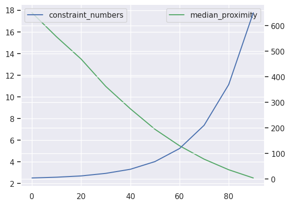
[13]:
ax = sampled_params_df[::num].constraint_proximity_skewness.plot(c="g")
ax2 = ax.twinx()
ax2 = sampled_params_df[::num].median_proximity.plot(ax=ax2)
ax.legend()
ax2.legend()
[13]:
<matplotlib.legend.Legend at 0x7f340c2eacc0>
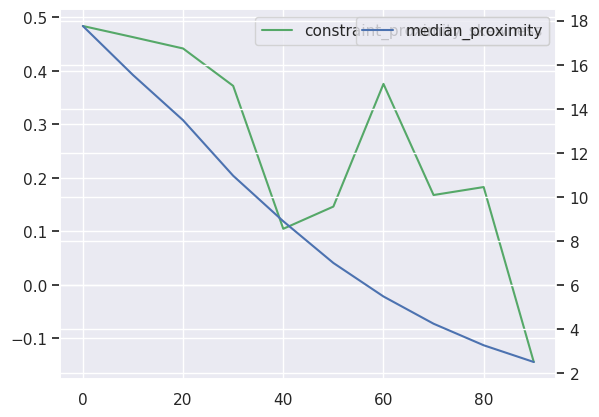
[14]:
# subplots showing starting bathymetry error
grids = []
titles = []
cbar_labels = []
constraints = []
for i, row in sampled_params_df.iterrows():
if i % num == 0:
constraint_points = pd.read_csv(row.constraint_points_fname)
# calculate min dist between each grid cell and nearest constraint
coords = vd.grid_coordinates(
region=inversion_region,
spacing=100,
)
grid = vd.make_xarray_grid(coords, np.ones_like(coords[0]), data_names="z").z
min_dist = (
utils.dist_nearest_points(
constraint_points,
grid,
).min_dist
/ 1e3
)
# mask to the ice shelf outline
min_dist = polar_utils.mask_from_shp(
shapefile="../results/Ross_Sea/Ross_Sea_outline.shp",
grid=min_dist,
invert=False,
masked=True,
)
# add to lists
grids.append(min_dist)
titles.append(f"Median: {round(row.median_proximity)}")
# cbar_labels.append(f"RMSE: {round(utils.rmse(dif),2)} (m)")
constraints.append(constraint_points[constraint_points.inside])
fig = maps.subplots(
grids,
fig_title="Constraint proximity",
titles=titles,
cbar_label="distance (km)",
cmap="dense",
hist=True,
cpt_lims=polar_utils.get_combined_min_max(grids, robust=True),
point_sets=constraints,
# points_style="p.02c",
cbar_font="18p,Helvetica,black",
yshift_amount=-1.2,
)
fig.show()
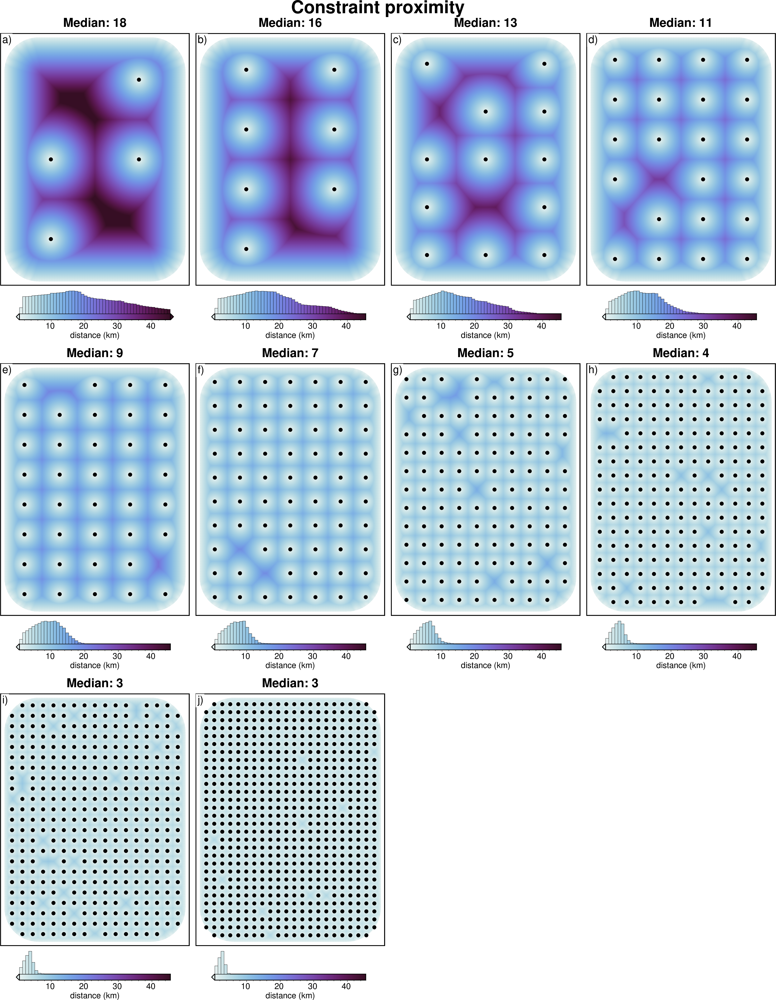
[15]:
# subplots showing starting bathymetry error
grids = []
titles = []
cbar_labels = []
constraints = []
for i, row in sampled_params_df.iterrows():
if i % num == 0:
starting_bathymetry = xr.open_dataarray(row.starting_bathymetry_fname)
constraint_points = pd.read_csv(row.constraint_points_fname)
dif = bathymetry - starting_bathymetry
dif = dif.sel(
easting=slice(inversion_region[0], inversion_region[1]),
northing=slice(inversion_region[2], inversion_region[3]),
)
# add to lists
grids.append(dif)
titles.append(f"# constraints: {round(row.constraint_numbers)}")
cbar_labels.append(f"RMSE: {round(utils.rmse(dif), 2)} (m)")
constraints.append(constraint_points)
fig = maps.subplots(
grids,
fig_title="Starting bathymetry error",
titles=titles,
cbar_labels=cbar_labels,
cmap="balance+h0",
hist=True,
cpt_lims=polar_utils.get_combined_min_max(grids, robust=True),
point_sets=constraints,
# points_style="p.02c",
cbar_font="18p,Helvetica,black",
yshift_amount=-1.2,
)
fig.show()
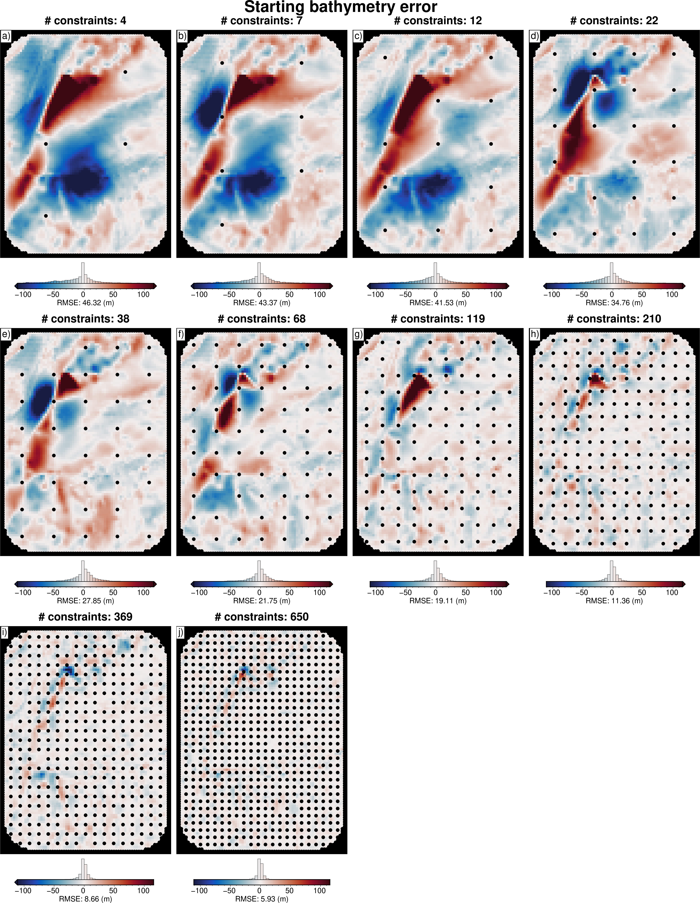
[16]:
sampled_params_df.columns
[16]:
Index(['constraint_numbers', 'regional_strengths', 'constraint_points_fname',
'starting_bathymetry_fname', 'constraints_starting_rmse',
'median_proximity', 'maximum_constraint_proximity',
'constraint_proximity_skewness', 'constraints_per_10000sq_km'],
dtype='object')
[17]:
metric = "median_proximity"
grids = []
names = []
for i, row in tqdm(sampled_params_df.iterrows(), total=len(sampled_params_df)):
if i % num == 0:
starting_bathymetry = xr.load_dataarray(row.starting_bathymetry_fname)
starting_bathymetry = starting_bathymetry.sel(
easting=slice(inversion_region[0], inversion_region[1]),
northing=slice(inversion_region[2], inversion_region[3]),
)
grd = inside_bathymetry - starting_bathymetry
grids.append(grd)
names.append(round(row[metric], 1))
raps_das = []
for i, g in enumerate(grids):
raps_das.append(
xrft.isotropic_power_spectrum(
g,
dim=["easting", "northing"],
# detrend='constant',
detrend="linear",
# window=False,
# nfactor=4,
# spacing_tol=0.01,
# nfactor=3,
truncate=False,
)
)
fig, ax = plt.subplots(figsize=(5, 3.5))
norm = plt.Normalize(
vmin=sampled_params_df[metric].min(),
vmax=sampled_params_df[metric].max(),
)
max_powers = []
max_power_wavelengths = []
for i, da in enumerate(raps_das):
ax.plot(
(1 / da.freq_r) / 1e3,
da,
label=names[i],
color=plt.cm.viridis(norm([names[i]])),
)
max_ind = da.idxmax()
max_power = da.max().to_numpy()
max_power_wavelength = 1 / (da[da == max_power].freq_r.to_numpy()[0]) / 1e3
max_power_wavelengths.append(max_power_wavelength)
max_powers.append(max_power)
ax.scatter(
x=max_power_wavelength,
y=max_power,
marker="*",
edgecolor="black",
linewidth=0.5,
color=plt.cm.viridis(norm(names[i])), # pylint: disable=no-member
s=60,
zorder=20,
)
print(f"Max y value at x value: {max_power_wavelength}")
# ax.set_xscale("log")
ax.set_yscale("log")
ax.legend(title=metric, loc="center left", bbox_to_anchor=(1, 0.5))
ax.set_xlabel("Wavelength (km)")
ax.set_ylabel("Power ($m^3$)")
ax.set_title("Radially averaged PSD of starting bed errors")
plt.tight_layout()
# ax.xaxis.set_major_formatter(mpl.ticker.StrMethodFormatter("{x:.1f}"))
Max y value at x value: 84.59814012867712
Max y value at x value: 84.59814012867712
Max y value at x value: 84.59814012867712
Max y value at x value: 84.59814012867712
Max y value at x value: 34.90619229494806
Max y value at x value: 34.90619229494806
Max y value at x value: 34.90619229494806
Max y value at x value: 21.25768200573872
Max y value at x value: 15.36769046614745
Max y value at x value: 11.988087785514033
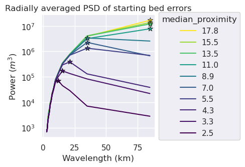
[18]:
y = max_power_wavelengths
x = names
m, b = np.polyfit(
x,
y,
1,
)
plt.scatter(
x,
y,
)
# plot y = m*x + b
plt.axline(xy1=(0, b), slope=m, label=f"$y = {m:.3f}x {b:+.3f}$")
plt.legend()
[18]:
<matplotlib.legend.Legend at 0x7f339c33b740>
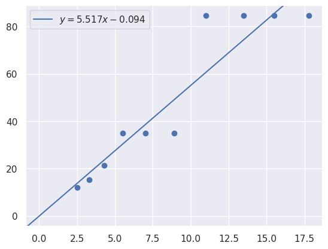
[19]:
sampled_params_df["starting_bathymetry_mae"] = pd.Series()
sampled_params_df["starting_bathymetry_rmse"] = pd.Series()
for i, row in tqdm(sampled_params_df.iterrows(), total=len(sampled_params_df)):
starting_bathymetry = xr.load_dataarray(row.starting_bathymetry_fname)
starting_bathymetry = starting_bathymetry.sel(
easting=slice(inversion_region[0], inversion_region[1]),
northing=slice(inversion_region[2], inversion_region[3]),
)
starting_bathymetry_mae = float(
np.mean(np.abs(inside_bathymetry - starting_bathymetry))
)
starting_bathymetry_rmse = utils.rmse(inside_bathymetry - starting_bathymetry)
sampled_params_df.loc[i, "starting_bathymetry_mae"] = starting_bathymetry_mae
sampled_params_df.loc[i, "starting_bathymetry_rmse"] = starting_bathymetry_rmse
sampled_params_df
[19]:
| constraint_numbers | regional_strengths | constraint_points_fname | starting_bathymetry_fname | constraints_starting_rmse | median_proximity | maximum_constraint_proximity | constraint_proximity_skewness | constraints_per_10000sq_km | starting_bathymetry_mae | starting_bathymetry_rmse | |
|---|---|---|---|---|---|---|---|---|---|---|---|
| 0 | 4 | 20.0 | ../results/Ross_Sea/ensembles/Ross_Sea_ensembl... | ../results/Ross_Sea/ensembles/Ross_Sea_ensembl... | 0.00356 | 17.755 | 51.305 | 0.483691 | 282.666667 | 28.351063 | 46.321446 |
| 1 | 4 | 40.0 | ../results/Ross_Sea/ensembles/Ross_Sea_ensembl... | ../results/Ross_Sea/ensembles/Ross_Sea_ensembl... | 0.00356 | 17.755 | 51.305 | 0.483691 | 282.666667 | 28.351063 | 46.321446 |
| 2 | 4 | 60.0 | ../results/Ross_Sea/ensembles/Ross_Sea_ensembl... | ../results/Ross_Sea/ensembles/Ross_Sea_ensembl... | 0.00356 | 17.755 | 51.305 | 0.483691 | 282.666667 | 28.351063 | 46.321446 |
| 3 | 4 | 80.0 | ../results/Ross_Sea/ensembles/Ross_Sea_ensembl... | ../results/Ross_Sea/ensembles/Ross_Sea_ensembl... | 0.00356 | 17.755 | 51.305 | 0.483691 | 282.666667 | 28.351063 | 46.321446 |
| 4 | 4 | 100.0 | ../results/Ross_Sea/ensembles/Ross_Sea_ensembl... | ../results/Ross_Sea/ensembles/Ross_Sea_ensembl... | 0.00356 | 17.755 | 51.305 | 0.483691 | 282.666667 | 28.351063 | 46.321446 |
| ... | ... | ... | ... | ... | ... | ... | ... | ... | ... | ... | ... |
| 95 | 650 | 120.0 | ../results/Ross_Sea/ensembles/Ross_Sea_ensembl... | ../results/Ross_Sea/ensembles/Ross_Sea_ensembl... | 0.28303 | 2.520 | 6.333 | -0.144477 | 496.666667 | 3.335341 | 5.928079 |
| 96 | 650 | 140.0 | ../results/Ross_Sea/ensembles/Ross_Sea_ensembl... | ../results/Ross_Sea/ensembles/Ross_Sea_ensembl... | 0.28303 | 2.520 | 6.333 | -0.144477 | 496.666667 | 3.335341 | 5.928079 |
| 97 | 650 | 160.0 | ../results/Ross_Sea/ensembles/Ross_Sea_ensembl... | ../results/Ross_Sea/ensembles/Ross_Sea_ensembl... | 0.28303 | 2.520 | 6.333 | -0.144477 | 496.666667 | 3.335341 | 5.928079 |
| 98 | 650 | 180.0 | ../results/Ross_Sea/ensembles/Ross_Sea_ensembl... | ../results/Ross_Sea/ensembles/Ross_Sea_ensembl... | 0.28303 | 2.520 | 6.333 | -0.144477 | 496.666667 | 3.335341 | 5.928079 |
| 99 | 650 | 200.0 | ../results/Ross_Sea/ensembles/Ross_Sea_ensembl... | ../results/Ross_Sea/ensembles/Ross_Sea_ensembl... | 0.28303 | 2.520 | 6.333 | -0.144477 | 496.666667 | 3.335341 | 5.928079 |
100 rows × 11 columns
[20]:
sampled_params_df.to_csv(ensemble_fname, index=False)
[21]:
sampled_params_df = pd.read_csv(ensemble_fname)
sampled_params_df.head()
[21]:
| constraint_numbers | regional_strengths | constraint_points_fname | starting_bathymetry_fname | constraints_starting_rmse | median_proximity | maximum_constraint_proximity | constraint_proximity_skewness | constraints_per_10000sq_km | starting_bathymetry_mae | starting_bathymetry_rmse | |
|---|---|---|---|---|---|---|---|---|---|---|---|
| 0 | 4 | 20.0 | ../results/Ross_Sea/ensembles/Ross_Sea_ensembl... | ../results/Ross_Sea/ensembles/Ross_Sea_ensembl... | 0.00356 | 17.755 | 51.305 | 0.483691 | 282.666667 | 28.351063 | 46.321446 |
| 1 | 4 | 40.0 | ../results/Ross_Sea/ensembles/Ross_Sea_ensembl... | ../results/Ross_Sea/ensembles/Ross_Sea_ensembl... | 0.00356 | 17.755 | 51.305 | 0.483691 | 282.666667 | 28.351063 | 46.321446 |
| 2 | 4 | 60.0 | ../results/Ross_Sea/ensembles/Ross_Sea_ensembl... | ../results/Ross_Sea/ensembles/Ross_Sea_ensembl... | 0.00356 | 17.755 | 51.305 | 0.483691 | 282.666667 | 28.351063 | 46.321446 |
| 3 | 4 | 80.0 | ../results/Ross_Sea/ensembles/Ross_Sea_ensembl... | ../results/Ross_Sea/ensembles/Ross_Sea_ensembl... | 0.00356 | 17.755 | 51.305 | 0.483691 | 282.666667 | 28.351063 | 46.321446 |
| 4 | 4 | 100.0 | ../results/Ross_Sea/ensembles/Ross_Sea_ensembl... | ../results/Ross_Sea/ensembles/Ross_Sea_ensembl... | 0.00356 | 17.755 | 51.305 | 0.483691 | 282.666667 | 28.351063 | 46.321446 |
Create observed gravity¶
rescale regional field
[22]:
sampled_params_df["grav_df_fname"] = pd.Series()
for i, row in tqdm(sampled_params_df.iterrows(), total=len(sampled_params_df)):
# set file names, add to dataframe
sampled_params_df.loc[i, "grav_df_fname"] = f"{ensemble_path}_grav_df_{i}.csv"
sampled_params_df.head()
[22]:
| constraint_numbers | regional_strengths | constraint_points_fname | starting_bathymetry_fname | constraints_starting_rmse | median_proximity | maximum_constraint_proximity | constraint_proximity_skewness | constraints_per_10000sq_km | starting_bathymetry_mae | starting_bathymetry_rmse | grav_df_fname | |
|---|---|---|---|---|---|---|---|---|---|---|---|---|
| 0 | 4 | 20.0 | ../results/Ross_Sea/ensembles/Ross_Sea_ensembl... | ../results/Ross_Sea/ensembles/Ross_Sea_ensembl... | 0.00356 | 17.755 | 51.305 | 0.483691 | 282.666667 | 28.351063 | 46.321446 | ../results/Ross_Sea/ensembles/Ross_Sea_ensembl... |
| 1 | 4 | 40.0 | ../results/Ross_Sea/ensembles/Ross_Sea_ensembl... | ../results/Ross_Sea/ensembles/Ross_Sea_ensembl... | 0.00356 | 17.755 | 51.305 | 0.483691 | 282.666667 | 28.351063 | 46.321446 | ../results/Ross_Sea/ensembles/Ross_Sea_ensembl... |
| 2 | 4 | 60.0 | ../results/Ross_Sea/ensembles/Ross_Sea_ensembl... | ../results/Ross_Sea/ensembles/Ross_Sea_ensembl... | 0.00356 | 17.755 | 51.305 | 0.483691 | 282.666667 | 28.351063 | 46.321446 | ../results/Ross_Sea/ensembles/Ross_Sea_ensembl... |
| 3 | 4 | 80.0 | ../results/Ross_Sea/ensembles/Ross_Sea_ensembl... | ../results/Ross_Sea/ensembles/Ross_Sea_ensembl... | 0.00356 | 17.755 | 51.305 | 0.483691 | 282.666667 | 28.351063 | 46.321446 | ../results/Ross_Sea/ensembles/Ross_Sea_ensembl... |
| 4 | 4 | 100.0 | ../results/Ross_Sea/ensembles/Ross_Sea_ensembl... | ../results/Ross_Sea/ensembles/Ross_Sea_ensembl... | 0.00356 | 17.755 | 51.305 | 0.483691 | 282.666667 | 28.351063 | 46.321446 | ../results/Ross_Sea/ensembles/Ross_Sea_ensembl... |
[23]:
logging.getLogger().setLevel(logging.WARNING)
grav_grid = original_grav_df.set_index(["northing", "easting"]).to_xarray()
for i, row in tqdm(sampled_params_df.iterrows(), total=len(sampled_params_df)):
# re-scale the regional gravity
regional_grav = utils.normalize_xarray(
grav_grid.basement_grav_normalized,
low=0,
high=row.regional_strengths,
).rename("basement_grav")
regional_grav -= regional_grav.mean()
# add to new dataframe
grav_df = copy.deepcopy(original_grav_df.drop(columns=["basement_grav_normalized"]))
grav_df["basement_grav_scaled"] = (
vd.grid_to_table(regional_grav).reset_index().basement_grav
)
# add basement and bathymetry forward gravities together to make observed gravity
grav_df["gravity_anomaly"] = grav_df.bathymetry_grav + grav_df.basement_grav_scaled
sampled_params_df.loc[i, "regional_stdev"] = grav_df.basement_grav_scaled.std()
# save to files
grav_df.to_csv(row.grav_df_fname, index=False)
sampled_params_df.head()
[23]:
| constraint_numbers | regional_strengths | constraint_points_fname | starting_bathymetry_fname | constraints_starting_rmse | median_proximity | maximum_constraint_proximity | constraint_proximity_skewness | constraints_per_10000sq_km | starting_bathymetry_mae | starting_bathymetry_rmse | grav_df_fname | regional_stdev | |
|---|---|---|---|---|---|---|---|---|---|---|---|---|---|
| 0 | 4 | 20.0 | ../results/Ross_Sea/ensembles/Ross_Sea_ensembl... | ../results/Ross_Sea/ensembles/Ross_Sea_ensembl... | 0.00356 | 17.755 | 51.305 | 0.483691 | 282.666667 | 28.351063 | 46.321446 | ../results/Ross_Sea/ensembles/Ross_Sea_ensembl... | 4.089101 |
| 1 | 4 | 40.0 | ../results/Ross_Sea/ensembles/Ross_Sea_ensembl... | ../results/Ross_Sea/ensembles/Ross_Sea_ensembl... | 0.00356 | 17.755 | 51.305 | 0.483691 | 282.666667 | 28.351063 | 46.321446 | ../results/Ross_Sea/ensembles/Ross_Sea_ensembl... | 8.178203 |
| 2 | 4 | 60.0 | ../results/Ross_Sea/ensembles/Ross_Sea_ensembl... | ../results/Ross_Sea/ensembles/Ross_Sea_ensembl... | 0.00356 | 17.755 | 51.305 | 0.483691 | 282.666667 | 28.351063 | 46.321446 | ../results/Ross_Sea/ensembles/Ross_Sea_ensembl... | 12.267304 |
| 3 | 4 | 80.0 | ../results/Ross_Sea/ensembles/Ross_Sea_ensembl... | ../results/Ross_Sea/ensembles/Ross_Sea_ensembl... | 0.00356 | 17.755 | 51.305 | 0.483691 | 282.666667 | 28.351063 | 46.321446 | ../results/Ross_Sea/ensembles/Ross_Sea_ensembl... | 16.356405 |
| 4 | 4 | 100.0 | ../results/Ross_Sea/ensembles/Ross_Sea_ensembl... | ../results/Ross_Sea/ensembles/Ross_Sea_ensembl... | 0.00356 | 17.755 | 51.305 | 0.483691 | 282.666667 | 28.351063 | 46.321446 | ../results/Ross_Sea/ensembles/Ross_Sea_ensembl... | 20.445507 |
[24]:
sampled_params_df.to_csv(ensemble_fname, index=False)
[25]:
sampled_params_df = pd.read_csv(ensemble_fname)
sampled_params_df.head()
[25]:
| constraint_numbers | regional_strengths | constraint_points_fname | starting_bathymetry_fname | constraints_starting_rmse | median_proximity | maximum_constraint_proximity | constraint_proximity_skewness | constraints_per_10000sq_km | starting_bathymetry_mae | starting_bathymetry_rmse | grav_df_fname | regional_stdev | |
|---|---|---|---|---|---|---|---|---|---|---|---|---|---|
| 0 | 4 | 20.0 | ../results/Ross_Sea/ensembles/Ross_Sea_ensembl... | ../results/Ross_Sea/ensembles/Ross_Sea_ensembl... | 0.00356 | 17.755 | 51.305 | 0.483691 | 282.666667 | 28.351063 | 46.321446 | ../results/Ross_Sea/ensembles/Ross_Sea_ensembl... | 4.089101 |
| 1 | 4 | 40.0 | ../results/Ross_Sea/ensembles/Ross_Sea_ensembl... | ../results/Ross_Sea/ensembles/Ross_Sea_ensembl... | 0.00356 | 17.755 | 51.305 | 0.483691 | 282.666667 | 28.351063 | 46.321446 | ../results/Ross_Sea/ensembles/Ross_Sea_ensembl... | 8.178203 |
| 2 | 4 | 60.0 | ../results/Ross_Sea/ensembles/Ross_Sea_ensembl... | ../results/Ross_Sea/ensembles/Ross_Sea_ensembl... | 0.00356 | 17.755 | 51.305 | 0.483691 | 282.666667 | 28.351063 | 46.321446 | ../results/Ross_Sea/ensembles/Ross_Sea_ensembl... | 12.267304 |
| 3 | 4 | 80.0 | ../results/Ross_Sea/ensembles/Ross_Sea_ensembl... | ../results/Ross_Sea/ensembles/Ross_Sea_ensembl... | 0.00356 | 17.755 | 51.305 | 0.483691 | 282.666667 | 28.351063 | 46.321446 | ../results/Ross_Sea/ensembles/Ross_Sea_ensembl... | 16.356405 |
| 4 | 4 | 100.0 | ../results/Ross_Sea/ensembles/Ross_Sea_ensembl... | ../results/Ross_Sea/ensembles/Ross_Sea_ensembl... | 0.00356 | 17.755 | 51.305 | 0.483691 | 282.666667 | 28.351063 | 46.321446 | ../results/Ross_Sea/ensembles/Ross_Sea_ensembl... | 20.445507 |
[26]:
sampled_params_df.describe()
[26]:
| constraint_numbers | regional_strengths | constraints_starting_rmse | median_proximity | maximum_constraint_proximity | constraint_proximity_skewness | constraints_per_10000sq_km | starting_bathymetry_mae | starting_bathymetry_rmse | regional_stdev | |
|---|---|---|---|---|---|---|---|---|---|---|
| count | 100.000000 | 100.000000 | 100.000000 | 100.000000 | 100.000000 | 100.000000 | 100.000000 | 100.000000 | 100.000000 | 100.000000 |
| mean | 149.900000 | 110.000000 | 0.083960 | 8.919700 | 25.135300 | 0.259203 | 330.933333 | 15.135699 | 26.063274 | 22.490057 |
| std | 200.751844 | 57.735027 | 0.095932 | 5.092535 | 14.650223 | 0.192085 | 66.431876 | 8.923908 | 14.282005 | 11.804219 |
| min | 4.000000 | 20.000000 | 0.003560 | 2.520000 | 6.333000 | -0.144477 | 282.666667 | 3.335341 | 5.928079 | 4.089101 |
| 25% | 12.000000 | 60.000000 | 0.006497 | 4.256000 | 12.387000 | 0.146099 | 285.333333 | 6.381553 | 11.358153 | 12.267304 |
| 50% | 53.000000 | 110.000000 | 0.045115 | 7.956500 | 20.771500 | 0.277189 | 299.000000 | 13.749814 | 24.798910 | 22.490057 |
| 75% | 210.000000 | 160.000000 | 0.131168 | 13.483000 | 38.792000 | 0.441687 | 350.000000 | 24.695177 | 41.525873 | 32.712811 |
| max | 650.000000 | 200.000000 | 0.283030 | 17.755000 | 51.305000 | 0.483691 | 496.666667 | 28.351063 | 46.321446 | 40.891013 |
[27]:
# subplots showing true regional gravity
grids = []
titles = []
for i, row in (
sampled_params_df.sort_values(by=["regional_strengths"]).reset_index().iterrows()
):
if i % num == 0:
grav_df = pd.read_csv(row.grav_df_fname)
grid = (
grav_df.set_index(["northing", "easting"]).to_xarray().basement_grav_scaled
)
# add to lists
grids.append(grid)
titles.append(f"Field strength: {round(row.regional_strengths)}")
fig = maps.subplots(
grids,
fig_title="Regional gravity",
titles=titles,
hist=True,
cpt_lims=polar_utils.get_combined_min_max(grids, robust=True),
cbar_font="18p,Helvetica,black",
yshift_amount=-1.2,
)
fig.show()
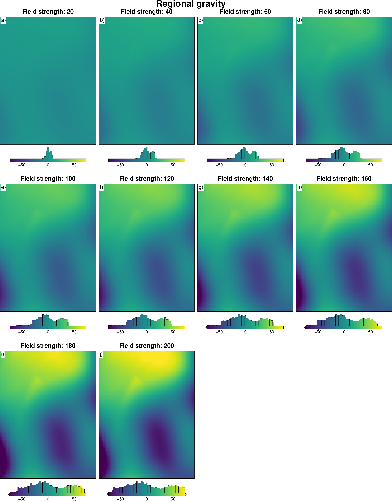
[28]:
# subplots showing gravity anomaly
grids = []
titles = []
for i, row in (
sampled_params_df.sort_values(by=["regional_strengths"]).reset_index().iterrows()
):
if i % num == 0:
grav_df = pd.read_csv(row.grav_df_fname)
grid = grav_df.set_index(["northing", "easting"]).to_xarray().gravity_anomaly
# add to lists
grids.append(grid)
titles.append(f"Field strength: {round(row.regional_strengths)}")
fig = maps.subplots(
grids,
fig_title="Gravity anomaly",
titles=titles,
hist=True,
cpt_lims=polar_utils.get_combined_min_max(grids, robust=True),
cbar_font="18p,Helvetica,black",
yshift_amount=-1.2,
)
fig.show()
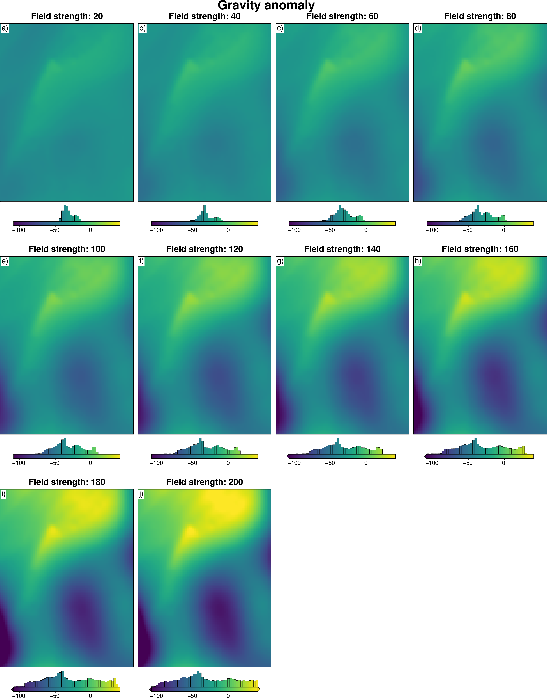
Density optimization¶
[29]:
for i, row in sampled_params_df.iterrows():
# add results file name
sampled_params_df.loc[i, "results_fname"] = f"{ensemble_path}_results_{i}"
sampled_params_df.loc[i, "inverted_bathymetry_fname"] = (
f"{ensemble_path}_inverted_bathymetry_{i}.nc"
)
sampled_params_df.head()
[29]:
| constraint_numbers | regional_strengths | constraint_points_fname | starting_bathymetry_fname | constraints_starting_rmse | median_proximity | maximum_constraint_proximity | constraint_proximity_skewness | constraints_per_10000sq_km | starting_bathymetry_mae | starting_bathymetry_rmse | grav_df_fname | regional_stdev | results_fname | inverted_bathymetry_fname | |
|---|---|---|---|---|---|---|---|---|---|---|---|---|---|---|---|
| 0 | 4 | 20.0 | ../results/Ross_Sea/ensembles/Ross_Sea_ensembl... | ../results/Ross_Sea/ensembles/Ross_Sea_ensembl... | 0.00356 | 17.755 | 51.305 | 0.483691 | 282.666667 | 28.351063 | 46.321446 | ../results/Ross_Sea/ensembles/Ross_Sea_ensembl... | 4.089101 | ../results/Ross_Sea/ensembles/Ross_Sea_ensembl... | ../results/Ross_Sea/ensembles/Ross_Sea_ensembl... |
| 1 | 4 | 40.0 | ../results/Ross_Sea/ensembles/Ross_Sea_ensembl... | ../results/Ross_Sea/ensembles/Ross_Sea_ensembl... | 0.00356 | 17.755 | 51.305 | 0.483691 | 282.666667 | 28.351063 | 46.321446 | ../results/Ross_Sea/ensembles/Ross_Sea_ensembl... | 8.178203 | ../results/Ross_Sea/ensembles/Ross_Sea_ensembl... | ../results/Ross_Sea/ensembles/Ross_Sea_ensembl... |
| 2 | 4 | 60.0 | ../results/Ross_Sea/ensembles/Ross_Sea_ensembl... | ../results/Ross_Sea/ensembles/Ross_Sea_ensembl... | 0.00356 | 17.755 | 51.305 | 0.483691 | 282.666667 | 28.351063 | 46.321446 | ../results/Ross_Sea/ensembles/Ross_Sea_ensembl... | 12.267304 | ../results/Ross_Sea/ensembles/Ross_Sea_ensembl... | ../results/Ross_Sea/ensembles/Ross_Sea_ensembl... |
| 3 | 4 | 80.0 | ../results/Ross_Sea/ensembles/Ross_Sea_ensembl... | ../results/Ross_Sea/ensembles/Ross_Sea_ensembl... | 0.00356 | 17.755 | 51.305 | 0.483691 | 282.666667 | 28.351063 | 46.321446 | ../results/Ross_Sea/ensembles/Ross_Sea_ensembl... | 16.356405 | ../results/Ross_Sea/ensembles/Ross_Sea_ensembl... | ../results/Ross_Sea/ensembles/Ross_Sea_ensembl... |
| 4 | 4 | 100.0 | ../results/Ross_Sea/ensembles/Ross_Sea_ensembl... | ../results/Ross_Sea/ensembles/Ross_Sea_ensembl... | 0.00356 | 17.755 | 51.305 | 0.483691 | 282.666667 | 28.351063 | 46.321446 | ../results/Ross_Sea/ensembles/Ross_Sea_ensembl... | 20.445507 | ../results/Ross_Sea/ensembles/Ross_Sea_ensembl... | ../results/Ross_Sea/ensembles/Ross_Sea_ensembl... |
[30]:
for i, row in tqdm(
# sampled_params_df.iloc[11:].iterrows(), total=len(sampled_params_df)
sampled_params_df.iterrows(),
total=len(sampled_params_df),
):
# load data
grav_df = pd.read_csv(row.grav_df_fname)
starting_bathymetry = xr.load_dataarray(row.starting_bathymetry_fname)
constraint_points = pd.read_csv(row.constraint_points_fname)
# set kwargs to pass to the inversion
kwargs = {
# set stopping criteria
"max_iterations": 200,
"l2_norm_tolerance": 0.2**0.5, # square root of the gravity noise
"delta_l2_norm_tolerance": 1.008,
"solver_damping": 0.025,
}
# run an optimization to find the optimal density contrast
# automatically reruns inversion with optimal density contrast
# and saves the results to <fname>_results.pickle
_, _ = optimization.optimize_inversion_zref_density_contrast(
grav_df=grav_df,
constraints_df=constraint_points,
density_contrast_limits=(1400, 3300),
zref=0,
n_trials=8,
starting_topography=starting_bathymetry,
regional_grav_kwargs=dict(
method="constant",
constant=0,
),
fname=row.results_fname,
plot_cv=False,
progressbar=False,
**kwargs,
)
sampled_params_df.head()
Best density_contrast value (3300) is at the limit of provided values (3300, 1400) and thus is likely not a global minimum, expand the range of values tested to ensure the best parameter value is found.
Best density_contrast value (3300) is at the limit of provided values (3300, 1400) and thus is likely not a global minimum, expand the range of values tested to ensure the best parameter value is found.
Best density_contrast value (3300) is at the limit of provided values (3300, 1400) and thus is likely not a global minimum, expand the range of values tested to ensure the best parameter value is found.
Best density_contrast value (3300) is at the limit of provided values (3300, 1400) and thus is likely not a global minimum, expand the range of values tested to ensure the best parameter value is found.
Best density_contrast value (3300) is at the limit of provided values (3300, 1400) and thus is likely not a global minimum, expand the range of values tested to ensure the best parameter value is found.
Best density_contrast value (3300) is at the limit of provided values (3300, 1400) and thus is likely not a global minimum, expand the range of values tested to ensure the best parameter value is found.
Best density_contrast value (3300) is at the limit of provided values (3300, 1400) and thus is likely not a global minimum, expand the range of values tested to ensure the best parameter value is found.
Best density_contrast value (3300) is at the limit of provided values (3300, 1400) and thus is likely not a global minimum, expand the range of values tested to ensure the best parameter value is found.
Best density_contrast value (3300) is at the limit of provided values (3300, 1400) and thus is likely not a global minimum, expand the range of values tested to ensure the best parameter value is found.
Best density_contrast value (3300) is at the limit of provided values (3300, 1400) and thus is likely not a global minimum, expand the range of values tested to ensure the best parameter value is found.
Best density_contrast value (3300) is at the limit of provided values (3300, 1400) and thus is likely not a global minimum, expand the range of values tested to ensure the best parameter value is found.
Best density_contrast value (3300) is at the limit of provided values (3300, 1400) and thus is likely not a global minimum, expand the range of values tested to ensure the best parameter value is found.
Best density_contrast value (3300) is at the limit of provided values (3300, 1400) and thus is likely not a global minimum, expand the range of values tested to ensure the best parameter value is found.
Best density_contrast value (3300) is at the limit of provided values (3300, 1400) and thus is likely not a global minimum, expand the range of values tested to ensure the best parameter value is found.
Best density_contrast value (3300) is at the limit of provided values (3300, 1400) and thus is likely not a global minimum, expand the range of values tested to ensure the best parameter value is found.
Best density_contrast value (3300) is at the limit of provided values (3300, 1400) and thus is likely not a global minimum, expand the range of values tested to ensure the best parameter value is found.
Best density_contrast value (3300) is at the limit of provided values (3300, 1400) and thus is likely not a global minimum, expand the range of values tested to ensure the best parameter value is found.
Best density_contrast value (3300) is at the limit of provided values (3300, 1400) and thus is likely not a global minimum, expand the range of values tested to ensure the best parameter value is found.
Best density_contrast value (3300) is at the limit of provided values (3300, 1400) and thus is likely not a global minimum, expand the range of values tested to ensure the best parameter value is found.
Best density_contrast value (3300) is at the limit of provided values (3300, 1400) and thus is likely not a global minimum, expand the range of values tested to ensure the best parameter value is found.
Best density_contrast value (3300) is at the limit of provided values (3300, 1400) and thus is likely not a global minimum, expand the range of values tested to ensure the best parameter value is found.
Best density_contrast value (3300) is at the limit of provided values (3300, 1400) and thus is likely not a global minimum, expand the range of values tested to ensure the best parameter value is found.
Best density_contrast value (3300) is at the limit of provided values (3300, 1400) and thus is likely not a global minimum, expand the range of values tested to ensure the best parameter value is found.
Best density_contrast value (3300) is at the limit of provided values (3300, 1400) and thus is likely not a global minimum, expand the range of values tested to ensure the best parameter value is found.
Best density_contrast value (3300) is at the limit of provided values (3300, 1400) and thus is likely not a global minimum, expand the range of values tested to ensure the best parameter value is found.
Best density_contrast value (3300) is at the limit of provided values (3300, 1400) and thus is likely not a global minimum, expand the range of values tested to ensure the best parameter value is found.
Best density_contrast value (3300) is at the limit of provided values (3300, 1400) and thus is likely not a global minimum, expand the range of values tested to ensure the best parameter value is found.
Best density_contrast value (3300) is at the limit of provided values (3300, 1400) and thus is likely not a global minimum, expand the range of values tested to ensure the best parameter value is found.
Best density_contrast value (3300) is at the limit of provided values (3300, 1400) and thus is likely not a global minimum, expand the range of values tested to ensure the best parameter value is found.
Best density_contrast value (3300) is at the limit of provided values (3300, 1400) and thus is likely not a global minimum, expand the range of values tested to ensure the best parameter value is found.
Best density_contrast value (3300) is at the limit of provided values (3300, 1400) and thus is likely not a global minimum, expand the range of values tested to ensure the best parameter value is found.
Best density_contrast value (3300) is at the limit of provided values (3300, 1400) and thus is likely not a global minimum, expand the range of values tested to ensure the best parameter value is found.
Best density_contrast value (3300) is at the limit of provided values (3300, 1400) and thus is likely not a global minimum, expand the range of values tested to ensure the best parameter value is found.
Best density_contrast value (3300) is at the limit of provided values (3300, 1400) and thus is likely not a global minimum, expand the range of values tested to ensure the best parameter value is found.
Best density_contrast value (3300) is at the limit of provided values (3300, 1400) and thus is likely not a global minimum, expand the range of values tested to ensure the best parameter value is found.
Best density_contrast value (3300) is at the limit of provided values (3300, 1400) and thus is likely not a global minimum, expand the range of values tested to ensure the best parameter value is found.
Best density_contrast value (3300) is at the limit of provided values (3300, 1400) and thus is likely not a global minimum, expand the range of values tested to ensure the best parameter value is found.
Best density_contrast value (3300) is at the limit of provided values (3300, 1400) and thus is likely not a global minimum, expand the range of values tested to ensure the best parameter value is found.
[30]:
| constraint_numbers | regional_strengths | constraint_points_fname | starting_bathymetry_fname | constraints_starting_rmse | median_proximity | maximum_constraint_proximity | constraint_proximity_skewness | constraints_per_10000sq_km | starting_bathymetry_mae | starting_bathymetry_rmse | grav_df_fname | regional_stdev | results_fname | inverted_bathymetry_fname | |
|---|---|---|---|---|---|---|---|---|---|---|---|---|---|---|---|
| 0 | 4 | 20.0 | ../results/Ross_Sea/ensembles/Ross_Sea_ensembl... | ../results/Ross_Sea/ensembles/Ross_Sea_ensembl... | 0.00356 | 17.755 | 51.305 | 0.483691 | 282.666667 | 28.351063 | 46.321446 | ../results/Ross_Sea/ensembles/Ross_Sea_ensembl... | 4.089101 | ../results/Ross_Sea/ensembles/Ross_Sea_ensembl... | ../results/Ross_Sea/ensembles/Ross_Sea_ensembl... |
| 1 | 4 | 40.0 | ../results/Ross_Sea/ensembles/Ross_Sea_ensembl... | ../results/Ross_Sea/ensembles/Ross_Sea_ensembl... | 0.00356 | 17.755 | 51.305 | 0.483691 | 282.666667 | 28.351063 | 46.321446 | ../results/Ross_Sea/ensembles/Ross_Sea_ensembl... | 8.178203 | ../results/Ross_Sea/ensembles/Ross_Sea_ensembl... | ../results/Ross_Sea/ensembles/Ross_Sea_ensembl... |
| 2 | 4 | 60.0 | ../results/Ross_Sea/ensembles/Ross_Sea_ensembl... | ../results/Ross_Sea/ensembles/Ross_Sea_ensembl... | 0.00356 | 17.755 | 51.305 | 0.483691 | 282.666667 | 28.351063 | 46.321446 | ../results/Ross_Sea/ensembles/Ross_Sea_ensembl... | 12.267304 | ../results/Ross_Sea/ensembles/Ross_Sea_ensembl... | ../results/Ross_Sea/ensembles/Ross_Sea_ensembl... |
| 3 | 4 | 80.0 | ../results/Ross_Sea/ensembles/Ross_Sea_ensembl... | ../results/Ross_Sea/ensembles/Ross_Sea_ensembl... | 0.00356 | 17.755 | 51.305 | 0.483691 | 282.666667 | 28.351063 | 46.321446 | ../results/Ross_Sea/ensembles/Ross_Sea_ensembl... | 16.356405 | ../results/Ross_Sea/ensembles/Ross_Sea_ensembl... | ../results/Ross_Sea/ensembles/Ross_Sea_ensembl... |
| 4 | 4 | 100.0 | ../results/Ross_Sea/ensembles/Ross_Sea_ensembl... | ../results/Ross_Sea/ensembles/Ross_Sea_ensembl... | 0.00356 | 17.755 | 51.305 | 0.483691 | 282.666667 | 28.351063 | 46.321446 | ../results/Ross_Sea/ensembles/Ross_Sea_ensembl... | 20.445507 | ../results/Ross_Sea/ensembles/Ross_Sea_ensembl... | ../results/Ross_Sea/ensembles/Ross_Sea_ensembl... |
[31]:
for i, row in sampled_params_df.iterrows():
# load data
grav_df = pd.read_csv(row.grav_df_fname)
starting_bathymetry = xr.load_dataarray(row.starting_bathymetry_fname)
constraint_points = pd.read_csv(row.constraint_points_fname)
# load study
with pathlib.Path(f"{row.results_fname}_study.pickle").open("rb") as f:
study = pickle.load(f)
# add best density to dataframe
sampled_params_df.loc[i, "best_density_contrast"] = study.best_params[
"density_contrast"
]
# load saved inversion results
with pathlib.Path(f"{row.results_fname}_results.pickle").open("rb") as f:
topo_results, grav_results, parameters, elapsed_time = pickle.load(f)
final_bathymetry = topo_results.set_index(["northing", "easting"]).to_xarray().topo
# sample the inverted topography at the constraint points
constraint_points = utils.sample_grids(
constraint_points,
final_bathymetry,
f"inverted_bathymetry_{i}",
coord_names=("easting", "northing"),
)
constraints_rmse = utils.rmse(
constraint_points.true_upward - constraint_points[f"inverted_bathymetry_{i}"]
)
# clip to inversion region
final_bathymetry = final_bathymetry.sel(
easting=slice(inversion_region[0], inversion_region[1]),
northing=slice(inversion_region[2], inversion_region[3]),
)
inversion_rmse = utils.rmse(inside_bathymetry - final_bathymetry)
# save final topography to file
final_bathymetry.to_netcdf(row.inverted_bathymetry_fname)
# add to dataframe
sampled_params_df.loc[i, "constraints_rmse"] = constraints_rmse
sampled_params_df.loc[i, "inversion_rmse"] = inversion_rmse
sampled_params_df.head()
[31]:
| constraint_numbers | regional_strengths | constraint_points_fname | starting_bathymetry_fname | constraints_starting_rmse | median_proximity | maximum_constraint_proximity | constraint_proximity_skewness | constraints_per_10000sq_km | starting_bathymetry_mae | starting_bathymetry_rmse | grav_df_fname | regional_stdev | results_fname | inverted_bathymetry_fname | best_density_contrast | constraints_rmse | inversion_rmse | |
|---|---|---|---|---|---|---|---|---|---|---|---|---|---|---|---|---|---|---|
| 0 | 4 | 20.0 | ../results/Ross_Sea/ensembles/Ross_Sea_ensembl... | ../results/Ross_Sea/ensembles/Ross_Sea_ensembl... | 0.00356 | 17.755 | 51.305 | 0.483691 | 282.666667 | 28.351063 | 46.321446 | ../results/Ross_Sea/ensembles/Ross_Sea_ensembl... | 4.089101 | ../results/Ross_Sea/ensembles/Ross_Sea_ensembl... | ../results/Ross_Sea/ensembles/Ross_Sea_ensembl... | 1516.0 | 100.607651 | 72.304561 |
| 1 | 4 | 40.0 | ../results/Ross_Sea/ensembles/Ross_Sea_ensembl... | ../results/Ross_Sea/ensembles/Ross_Sea_ensembl... | 0.00356 | 17.755 | 51.305 | 0.483691 | 282.666667 | 28.351063 | 46.321446 | ../results/Ross_Sea/ensembles/Ross_Sea_ensembl... | 8.178203 | ../results/Ross_Sea/ensembles/Ross_Sea_ensembl... | ../results/Ross_Sea/ensembles/Ross_Sea_ensembl... | 1675.0 | 196.916741 | 145.160338 |
| 2 | 4 | 60.0 | ../results/Ross_Sea/ensembles/Ross_Sea_ensembl... | ../results/Ross_Sea/ensembles/Ross_Sea_ensembl... | 0.00356 | 17.755 | 51.305 | 0.483691 | 282.666667 | 28.351063 | 46.321446 | ../results/Ross_Sea/ensembles/Ross_Sea_ensembl... | 12.267304 | ../results/Ross_Sea/ensembles/Ross_Sea_ensembl... | ../results/Ross_Sea/ensembles/Ross_Sea_ensembl... | 1845.0 | 284.907328 | 209.025044 |
| 3 | 4 | 80.0 | ../results/Ross_Sea/ensembles/Ross_Sea_ensembl... | ../results/Ross_Sea/ensembles/Ross_Sea_ensembl... | 0.00356 | 17.755 | 51.305 | 0.483691 | 282.666667 | 28.351063 | 46.321446 | ../results/Ross_Sea/ensembles/Ross_Sea_ensembl... | 16.356405 | ../results/Ross_Sea/ensembles/Ross_Sea_ensembl... | ../results/Ross_Sea/ensembles/Ross_Sea_ensembl... | 2149.0 | 352.124626 | 267.289107 |
| 4 | 4 | 100.0 | ../results/Ross_Sea/ensembles/Ross_Sea_ensembl... | ../results/Ross_Sea/ensembles/Ross_Sea_ensembl... | 0.00356 | 17.755 | 51.305 | 0.483691 | 282.666667 | 28.351063 | 46.321446 | ../results/Ross_Sea/ensembles/Ross_Sea_ensembl... | 20.445507 | ../results/Ross_Sea/ensembles/Ross_Sea_ensembl... | ../results/Ross_Sea/ensembles/Ross_Sea_ensembl... | 2538.0 | 405.236779 | 316.810444 |
[32]:
sampled_params_df["topo_improvement_rmse"] = (
sampled_params_df.starting_bathymetry_rmse - sampled_params_df.inversion_rmse
)
[33]:
norm = plt.Normalize(
vmin=sampled_params_df.regional_stdev.to_numpy().min(),
vmax=sampled_params_df.regional_stdev.to_numpy().max(),
)
fig, ax = plt.subplots()
for i, row in sampled_params_df.iterrows():
# load study
with pathlib.Path(f"{row.results_fname}_study.pickle").open("rb") as f:
study = pickle.load(f)
label = "Best" if i == 0 else None
study_df = study.trials_dataframe()[["value", "params_density_contrast"]]
df = study_df.sort_values(by="params_density_contrast")
best_score = df.value.argmin()
ax.plot(
df.params_density_contrast.iloc[best_score],
df.value.iloc[best_score],
"s",
markersize=6,
color="r",
label=label,
zorder=10,
markeredgecolor="black",
linewidth=0.5,
)
ax.plot(
df.params_density_contrast,
df.value,
# marker="o",
color=plt.cm.viridis(norm(row.regional_stdev)), # pylint: disable=no-member
)
# ax.scatter(
# df.params_density_contrast,
# df.value,
# s=50,
# marker=".",
# color="black",
# edgecolors="black",
# zorder=10,
# )
ax.vlines(
true_density_contrast,
ax.get_ylim()[0],
ax.get_ylim()[1],
color="black",
linestyle="--",
label="True",
)
ax.legend(loc="best")
ax.set_title("Density contrast optimization")
ax.set_xlabel("Density contrast (kg/m$^3$)")
ax.set_ylabel("RMSE (m)")
sm = plt.cm.ScalarMappable(cmap="viridis", norm=norm)
cax = fig.add_axes([0.93, 0.1, 0.05, 0.8])
cbar = plt.colorbar(sm, cax=cax)
cbar.set_label("Regional strength (mGal)")
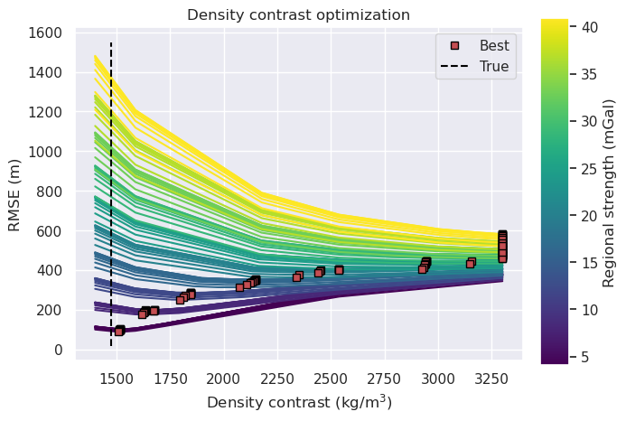
[34]:
sampled_params_df.to_csv(ensemble_fname, index=False)
[35]:
sampled_params_df = pd.read_csv(ensemble_fname)
sampled_params_df.head()
[35]:
| constraint_numbers | regional_strengths | constraint_points_fname | starting_bathymetry_fname | constraints_starting_rmse | median_proximity | maximum_constraint_proximity | constraint_proximity_skewness | constraints_per_10000sq_km | starting_bathymetry_mae | starting_bathymetry_rmse | grav_df_fname | regional_stdev | results_fname | inverted_bathymetry_fname | best_density_contrast | constraints_rmse | inversion_rmse | topo_improvement_rmse | |
|---|---|---|---|---|---|---|---|---|---|---|---|---|---|---|---|---|---|---|---|
| 0 | 4 | 20.0 | ../results/Ross_Sea/ensembles/Ross_Sea_ensembl... | ../results/Ross_Sea/ensembles/Ross_Sea_ensembl... | 0.00356 | 17.755 | 51.305 | 0.483691 | 282.666667 | 28.351063 | 46.321446 | ../results/Ross_Sea/ensembles/Ross_Sea_ensembl... | 4.089101 | ../results/Ross_Sea/ensembles/Ross_Sea_ensembl... | ../results/Ross_Sea/ensembles/Ross_Sea_ensembl... | 1516.0 | 100.607651 | 72.304561 | -25.983116 |
| 1 | 4 | 40.0 | ../results/Ross_Sea/ensembles/Ross_Sea_ensembl... | ../results/Ross_Sea/ensembles/Ross_Sea_ensembl... | 0.00356 | 17.755 | 51.305 | 0.483691 | 282.666667 | 28.351063 | 46.321446 | ../results/Ross_Sea/ensembles/Ross_Sea_ensembl... | 8.178203 | ../results/Ross_Sea/ensembles/Ross_Sea_ensembl... | ../results/Ross_Sea/ensembles/Ross_Sea_ensembl... | 1675.0 | 196.916741 | 145.160338 | -98.838892 |
| 2 | 4 | 60.0 | ../results/Ross_Sea/ensembles/Ross_Sea_ensembl... | ../results/Ross_Sea/ensembles/Ross_Sea_ensembl... | 0.00356 | 17.755 | 51.305 | 0.483691 | 282.666667 | 28.351063 | 46.321446 | ../results/Ross_Sea/ensembles/Ross_Sea_ensembl... | 12.267304 | ../results/Ross_Sea/ensembles/Ross_Sea_ensembl... | ../results/Ross_Sea/ensembles/Ross_Sea_ensembl... | 1845.0 | 284.907328 | 209.025044 | -162.703598 |
| 3 | 4 | 80.0 | ../results/Ross_Sea/ensembles/Ross_Sea_ensembl... | ../results/Ross_Sea/ensembles/Ross_Sea_ensembl... | 0.00356 | 17.755 | 51.305 | 0.483691 | 282.666667 | 28.351063 | 46.321446 | ../results/Ross_Sea/ensembles/Ross_Sea_ensembl... | 16.356405 | ../results/Ross_Sea/ensembles/Ross_Sea_ensembl... | ../results/Ross_Sea/ensembles/Ross_Sea_ensembl... | 2149.0 | 352.124626 | 267.289107 | -220.967662 |
| 4 | 4 | 100.0 | ../results/Ross_Sea/ensembles/Ross_Sea_ensembl... | ../results/Ross_Sea/ensembles/Ross_Sea_ensembl... | 0.00356 | 17.755 | 51.305 | 0.483691 | 282.666667 | 28.351063 | 46.321446 | ../results/Ross_Sea/ensembles/Ross_Sea_ensembl... | 20.445507 | ../results/Ross_Sea/ensembles/Ross_Sea_ensembl... | ../results/Ross_Sea/ensembles/Ross_Sea_ensembl... | 2538.0 | 405.236779 | 316.810444 | -270.488998 |
[36]:
sampled_params_df.describe()
[36]:
| constraint_numbers | regional_strengths | constraints_starting_rmse | median_proximity | maximum_constraint_proximity | constraint_proximity_skewness | constraints_per_10000sq_km | starting_bathymetry_mae | starting_bathymetry_rmse | regional_stdev | best_density_contrast | constraints_rmse | inversion_rmse | topo_improvement_rmse | |
|---|---|---|---|---|---|---|---|---|---|---|---|---|---|---|
| count | 100.000000 | 100.000000 | 100.000000 | 100.000000 | 100.000000 | 100.000000 | 100.000000 | 100.000000 | 100.000000 | 100.000000 | 100.000000 | 100.000000 | 100.000000 | 100.000000 |
| mean | 149.900000 | 110.000000 | 0.083960 | 8.919700 | 25.135300 | 0.259203 | 330.933333 | 15.135699 | 26.063274 | 22.490057 | 2571.320000 | 378.276749 | 301.880583 | -275.817309 |
| std | 200.751844 | 57.735027 | 0.095932 | 5.092535 | 14.650223 | 0.192085 | 66.431876 | 8.923908 | 14.282005 | 11.804219 | 706.209527 | 145.056577 | 120.556760 | 121.334007 |
| min | 4.000000 | 20.000000 | 0.003560 | 2.520000 | 6.333000 | -0.144477 | 282.666667 | 3.335341 | 5.928079 | 4.089101 | 1508.000000 | 87.810057 | 72.078367 | -442.968953 |
| 25% | 12.000000 | 60.000000 | 0.006497 | 4.256000 | 12.387000 | 0.146099 | 285.333333 | 6.381553 | 11.358153 | 12.267304 | 1845.000000 | 281.310934 | 209.025392 | -375.793658 |
| 50% | 53.000000 | 110.000000 | 0.045115 | 7.956500 | 20.771500 | 0.277189 | 299.000000 | 13.749814 | 24.798910 | 22.490057 | 2731.500000 | 405.243568 | 335.137232 | -305.955380 |
| 75% | 210.000000 | 160.000000 | 0.131168 | 13.483000 | 38.792000 | 0.441687 | 350.000000 | 24.695177 | 41.525873 | 32.712811 | 3300.000000 | 493.912515 | 402.496779 | -185.754519 |
| max | 650.000000 | 200.000000 | 0.283030 | 17.755000 | 51.305000 | 0.483691 | 496.666667 | 28.351063 | 46.321446 | 40.891013 | 3300.000000 | 580.498099 | 448.908124 | -25.983116 |
[37]:
fig = synth_plotting.plot_2var_ensemble(
sampled_params_df,
figsize=(6, 4),
x="median_proximity",
x_title="Median proximity (km)",
y="regional_stdev",
y_title="Regional field standard deviation (mGal)",
background="best_density_contrast",
background_title="Optimal density contrast",
background_robust=True,
# logx=True,
# flipx=True,
constrained_layout=False,
)
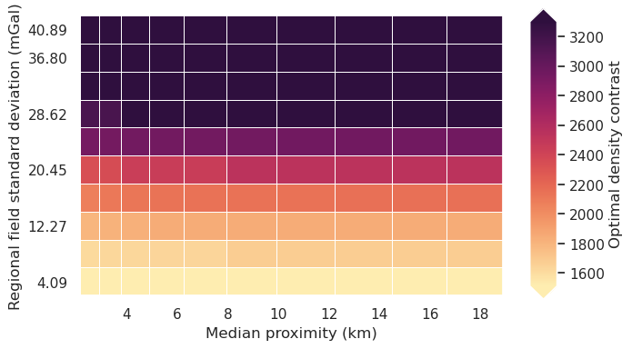
Redo with optimal density¶
[38]:
for i, row in sampled_params_df.iterrows():
# add results file name
sampled_params_df.loc[i, "final_inversion_results_fname"] = (
f"{ensemble_path}_final_inversion_{i}"
)
sampled_params_df.loc[i, "final_inverted_bathymetry_fname"] = (
f"{ensemble_path}_final_inverted_bathymetry_{i}.nc"
)
sampled_params_df.head()
[38]:
| constraint_numbers | regional_strengths | constraint_points_fname | starting_bathymetry_fname | constraints_starting_rmse | median_proximity | maximum_constraint_proximity | constraint_proximity_skewness | constraints_per_10000sq_km | starting_bathymetry_mae | ... | grav_df_fname | regional_stdev | results_fname | inverted_bathymetry_fname | best_density_contrast | constraints_rmse | inversion_rmse | topo_improvement_rmse | final_inversion_results_fname | final_inverted_bathymetry_fname | |
|---|---|---|---|---|---|---|---|---|---|---|---|---|---|---|---|---|---|---|---|---|---|
| 0 | 4 | 20.0 | ../results/Ross_Sea/ensembles/Ross_Sea_ensembl... | ../results/Ross_Sea/ensembles/Ross_Sea_ensembl... | 0.00356 | 17.755 | 51.305 | 0.483691 | 282.666667 | 28.351063 | ... | ../results/Ross_Sea/ensembles/Ross_Sea_ensembl... | 4.089101 | ../results/Ross_Sea/ensembles/Ross_Sea_ensembl... | ../results/Ross_Sea/ensembles/Ross_Sea_ensembl... | 1516.0 | 100.607651 | 72.304561 | -25.983116 | ../results/Ross_Sea/ensembles/Ross_Sea_ensembl... | ../results/Ross_Sea/ensembles/Ross_Sea_ensembl... |
| 1 | 4 | 40.0 | ../results/Ross_Sea/ensembles/Ross_Sea_ensembl... | ../results/Ross_Sea/ensembles/Ross_Sea_ensembl... | 0.00356 | 17.755 | 51.305 | 0.483691 | 282.666667 | 28.351063 | ... | ../results/Ross_Sea/ensembles/Ross_Sea_ensembl... | 8.178203 | ../results/Ross_Sea/ensembles/Ross_Sea_ensembl... | ../results/Ross_Sea/ensembles/Ross_Sea_ensembl... | 1675.0 | 196.916741 | 145.160338 | -98.838892 | ../results/Ross_Sea/ensembles/Ross_Sea_ensembl... | ../results/Ross_Sea/ensembles/Ross_Sea_ensembl... |
| 2 | 4 | 60.0 | ../results/Ross_Sea/ensembles/Ross_Sea_ensembl... | ../results/Ross_Sea/ensembles/Ross_Sea_ensembl... | 0.00356 | 17.755 | 51.305 | 0.483691 | 282.666667 | 28.351063 | ... | ../results/Ross_Sea/ensembles/Ross_Sea_ensembl... | 12.267304 | ../results/Ross_Sea/ensembles/Ross_Sea_ensembl... | ../results/Ross_Sea/ensembles/Ross_Sea_ensembl... | 1845.0 | 284.907328 | 209.025044 | -162.703598 | ../results/Ross_Sea/ensembles/Ross_Sea_ensembl... | ../results/Ross_Sea/ensembles/Ross_Sea_ensembl... |
| 3 | 4 | 80.0 | ../results/Ross_Sea/ensembles/Ross_Sea_ensembl... | ../results/Ross_Sea/ensembles/Ross_Sea_ensembl... | 0.00356 | 17.755 | 51.305 | 0.483691 | 282.666667 | 28.351063 | ... | ../results/Ross_Sea/ensembles/Ross_Sea_ensembl... | 16.356405 | ../results/Ross_Sea/ensembles/Ross_Sea_ensembl... | ../results/Ross_Sea/ensembles/Ross_Sea_ensembl... | 2149.0 | 352.124626 | 267.289107 | -220.967662 | ../results/Ross_Sea/ensembles/Ross_Sea_ensembl... | ../results/Ross_Sea/ensembles/Ross_Sea_ensembl... |
| 4 | 4 | 100.0 | ../results/Ross_Sea/ensembles/Ross_Sea_ensembl... | ../results/Ross_Sea/ensembles/Ross_Sea_ensembl... | 0.00356 | 17.755 | 51.305 | 0.483691 | 282.666667 | 28.351063 | ... | ../results/Ross_Sea/ensembles/Ross_Sea_ensembl... | 20.445507 | ../results/Ross_Sea/ensembles/Ross_Sea_ensembl... | ../results/Ross_Sea/ensembles/Ross_Sea_ensembl... | 2538.0 | 405.236779 | 316.810444 | -270.488998 | ../results/Ross_Sea/ensembles/Ross_Sea_ensembl... | ../results/Ross_Sea/ensembles/Ross_Sea_ensembl... |
5 rows × 21 columns
[39]:
regional_grav_kwargs = dict(
method="constraints",
grid_method="pygmt",
tension_factor=0,
)
[40]:
logging.getLogger().setLevel(logging.WARNING)
for i, row in tqdm(sampled_params_df.iterrows(), total=len(sampled_params_df)):
# load data
grav_df = pd.read_csv(row.grav_df_fname)
starting_bathymetry = xr.open_dataarray(row.starting_bathymetry_fname)
constraint_points = pd.read_csv(row.constraint_points_fname)
# set kwargs to pass to the inversion
kwargs = {
# set stopping criteria
"max_iterations": 200,
"l2_norm_tolerance": 0.2**0.5, # square root of the gravity noise
"delta_l2_norm_tolerance": 1.008,
"solver_damping": 0.025,
}
temp_reg_kwargs = copy.deepcopy(regional_grav_kwargs)
temp_reg_kwargs["constraints_df"] = constraint_points
# run the inversion workflow using the optimal damping and density values
_ = inversion.run_inversion_workflow(
grav_df=grav_df,
density_contrast=row.best_density_contrast,
zref=0,
starting_topography=starting_bathymetry,
regional_grav_kwargs=temp_reg_kwargs,
fname=row.final_inversion_results_fname,
create_starting_prisms=True,
calculate_starting_gravity=True,
calculate_regional_misfit=True,
**kwargs,
)
sampled_params_df.head()
[41]:
for i, row in sampled_params_df.iterrows():
# load data
grav_df = pd.read_csv(row.grav_df_fname)
starting_bathymetry = xr.load_dataarray(row.starting_bathymetry_fname)
constraint_points = pd.read_csv(row.constraint_points_fname)
# load saved inversion results
with pathlib.Path(f"{row.final_inversion_results_fname}_results.pickle").open(
"rb"
) as f:
topo_results, grav_results, parameters, elapsed_time = pickle.load(f)
final_bathymetry = topo_results.set_index(["northing", "easting"]).to_xarray().topo
# sample the inverted topography at the constraint points
constraint_points = utils.sample_grids(
constraint_points,
final_bathymetry,
f"final_inverted_bathymetry_{i}",
coord_names=("easting", "northing"),
)
constraints_rmse = utils.rmse(
constraint_points.true_upward
- constraint_points[f"final_inverted_bathymetry_{i}"]
)
# clip to inversion region
final_bathymetry = final_bathymetry.sel(
easting=slice(inversion_region[0], inversion_region[1]),
northing=slice(inversion_region[2], inversion_region[3]),
)
inversion_rmse = utils.rmse(inside_bathymetry - final_bathymetry)
# save final topography to file
final_bathymetry.to_netcdf(row.final_inverted_bathymetry_fname)
# add to dataframe
sampled_params_df.loc[i, "final_inversion_constraints_rmse"] = constraints_rmse
sampled_params_df.loc[i, "final_inversion_rmse"] = inversion_rmse
sampled_params_df.head()
[41]:
| constraint_numbers | regional_strengths | constraint_points_fname | starting_bathymetry_fname | constraints_starting_rmse | median_proximity | maximum_constraint_proximity | constraint_proximity_skewness | constraints_per_10000sq_km | starting_bathymetry_mae | ... | results_fname | inverted_bathymetry_fname | best_density_contrast | constraints_rmse | inversion_rmse | topo_improvement_rmse | final_inversion_results_fname | final_inverted_bathymetry_fname | final_inversion_constraints_rmse | final_inversion_rmse | |
|---|---|---|---|---|---|---|---|---|---|---|---|---|---|---|---|---|---|---|---|---|---|
| 0 | 4 | 20.0 | ../results/Ross_Sea/ensembles/Ross_Sea_ensembl... | ../results/Ross_Sea/ensembles/Ross_Sea_ensembl... | 0.00356 | 17.755 | 51.305 | 0.483691 | 282.666667 | 28.351063 | ... | ../results/Ross_Sea/ensembles/Ross_Sea_ensembl... | ../results/Ross_Sea/ensembles/Ross_Sea_ensembl... | 1516.0 | 100.607651 | 72.304561 | -25.983116 | ../results/Ross_Sea/ensembles/Ross_Sea_ensembl... | ../results/Ross_Sea/ensembles/Ross_Sea_ensembl... | 1.415311 | 25.687797 |
| 1 | 4 | 40.0 | ../results/Ross_Sea/ensembles/Ross_Sea_ensembl... | ../results/Ross_Sea/ensembles/Ross_Sea_ensembl... | 0.00356 | 17.755 | 51.305 | 0.483691 | 282.666667 | 28.351063 | ... | ../results/Ross_Sea/ensembles/Ross_Sea_ensembl... | ../results/Ross_Sea/ensembles/Ross_Sea_ensembl... | 1675.0 | 196.916741 | 145.160338 | -98.838892 | ../results/Ross_Sea/ensembles/Ross_Sea_ensembl... | ../results/Ross_Sea/ensembles/Ross_Sea_ensembl... | 1.815615 | 47.128332 |
| 2 | 4 | 60.0 | ../results/Ross_Sea/ensembles/Ross_Sea_ensembl... | ../results/Ross_Sea/ensembles/Ross_Sea_ensembl... | 0.00356 | 17.755 | 51.305 | 0.483691 | 282.666667 | 28.351063 | ... | ../results/Ross_Sea/ensembles/Ross_Sea_ensembl... | ../results/Ross_Sea/ensembles/Ross_Sea_ensembl... | 1845.0 | 284.907328 | 209.025044 | -162.703598 | ../results/Ross_Sea/ensembles/Ross_Sea_ensembl... | ../results/Ross_Sea/ensembles/Ross_Sea_ensembl... | 2.232705 | 64.401993 |
| 3 | 4 | 80.0 | ../results/Ross_Sea/ensembles/Ross_Sea_ensembl... | ../results/Ross_Sea/ensembles/Ross_Sea_ensembl... | 0.00356 | 17.755 | 51.305 | 0.483691 | 282.666667 | 28.351063 | ... | ../results/Ross_Sea/ensembles/Ross_Sea_ensembl... | ../results/Ross_Sea/ensembles/Ross_Sea_ensembl... | 2149.0 | 352.124626 | 267.289107 | -220.967662 | ../results/Ross_Sea/ensembles/Ross_Sea_ensembl... | ../results/Ross_Sea/ensembles/Ross_Sea_ensembl... | 2.517473 | 73.013989 |
| 4 | 4 | 100.0 | ../results/Ross_Sea/ensembles/Ross_Sea_ensembl... | ../results/Ross_Sea/ensembles/Ross_Sea_ensembl... | 0.00356 | 17.755 | 51.305 | 0.483691 | 282.666667 | 28.351063 | ... | ../results/Ross_Sea/ensembles/Ross_Sea_ensembl... | ../results/Ross_Sea/ensembles/Ross_Sea_ensembl... | 2538.0 | 405.236779 | 316.810444 | -270.488998 | ../results/Ross_Sea/ensembles/Ross_Sea_ensembl... | ../results/Ross_Sea/ensembles/Ross_Sea_ensembl... | 2.669346 | 76.345720 |
5 rows × 23 columns
[42]:
sampled_params_df["final_inversion_topo_improvement_rmse"] = (
sampled_params_df.starting_bathymetry_rmse - sampled_params_df.final_inversion_rmse
)
[43]:
sampled_params_df.to_csv(ensemble_fname, index=False)
[44]:
sampled_params_df = pd.read_csv(ensemble_fname)
sampled_params_df
[44]:
| constraint_numbers | regional_strengths | constraint_points_fname | starting_bathymetry_fname | constraints_starting_rmse | median_proximity | maximum_constraint_proximity | constraint_proximity_skewness | constraints_per_10000sq_km | starting_bathymetry_mae | ... | inverted_bathymetry_fname | best_density_contrast | constraints_rmse | inversion_rmse | topo_improvement_rmse | final_inversion_results_fname | final_inverted_bathymetry_fname | final_inversion_constraints_rmse | final_inversion_rmse | final_inversion_topo_improvement_rmse | |
|---|---|---|---|---|---|---|---|---|---|---|---|---|---|---|---|---|---|---|---|---|---|
| 0 | 4 | 20.0 | ../results/Ross_Sea/ensembles/Ross_Sea_ensembl... | ../results/Ross_Sea/ensembles/Ross_Sea_ensembl... | 0.00356 | 17.755 | 51.305 | 0.483691 | 282.666667 | 28.351063 | ... | ../results/Ross_Sea/ensembles/Ross_Sea_ensembl... | 1516.0 | 100.607651 | 72.304561 | -25.983116 | ../results/Ross_Sea/ensembles/Ross_Sea_ensembl... | ../results/Ross_Sea/ensembles/Ross_Sea_ensembl... | 1.415311 | 25.687797 | 20.633648 |
| 1 | 4 | 40.0 | ../results/Ross_Sea/ensembles/Ross_Sea_ensembl... | ../results/Ross_Sea/ensembles/Ross_Sea_ensembl... | 0.00356 | 17.755 | 51.305 | 0.483691 | 282.666667 | 28.351063 | ... | ../results/Ross_Sea/ensembles/Ross_Sea_ensembl... | 1675.0 | 196.916741 | 145.160338 | -98.838892 | ../results/Ross_Sea/ensembles/Ross_Sea_ensembl... | ../results/Ross_Sea/ensembles/Ross_Sea_ensembl... | 1.815615 | 47.128332 | -0.806886 |
| 2 | 4 | 60.0 | ../results/Ross_Sea/ensembles/Ross_Sea_ensembl... | ../results/Ross_Sea/ensembles/Ross_Sea_ensembl... | 0.00356 | 17.755 | 51.305 | 0.483691 | 282.666667 | 28.351063 | ... | ../results/Ross_Sea/ensembles/Ross_Sea_ensembl... | 1845.0 | 284.907328 | 209.025044 | -162.703598 | ../results/Ross_Sea/ensembles/Ross_Sea_ensembl... | ../results/Ross_Sea/ensembles/Ross_Sea_ensembl... | 2.232705 | 64.401993 | -18.080548 |
| 3 | 4 | 80.0 | ../results/Ross_Sea/ensembles/Ross_Sea_ensembl... | ../results/Ross_Sea/ensembles/Ross_Sea_ensembl... | 0.00356 | 17.755 | 51.305 | 0.483691 | 282.666667 | 28.351063 | ... | ../results/Ross_Sea/ensembles/Ross_Sea_ensembl... | 2149.0 | 352.124626 | 267.289107 | -220.967662 | ../results/Ross_Sea/ensembles/Ross_Sea_ensembl... | ../results/Ross_Sea/ensembles/Ross_Sea_ensembl... | 2.517473 | 73.013989 | -26.692543 |
| 4 | 4 | 100.0 | ../results/Ross_Sea/ensembles/Ross_Sea_ensembl... | ../results/Ross_Sea/ensembles/Ross_Sea_ensembl... | 0.00356 | 17.755 | 51.305 | 0.483691 | 282.666667 | 28.351063 | ... | ../results/Ross_Sea/ensembles/Ross_Sea_ensembl... | 2538.0 | 405.236779 | 316.810444 | -270.488998 | ../results/Ross_Sea/ensembles/Ross_Sea_ensembl... | ../results/Ross_Sea/ensembles/Ross_Sea_ensembl... | 2.669346 | 76.345720 | -30.024274 |
| ... | ... | ... | ... | ... | ... | ... | ... | ... | ... | ... | ... | ... | ... | ... | ... | ... | ... | ... | ... | ... | ... |
| 95 | 650 | 120.0 | ../results/Ross_Sea/ensembles/Ross_Sea_ensembl... | ../results/Ross_Sea/ensembles/Ross_Sea_ensembl... | 0.28303 | 2.520 | 6.333 | -0.144477 | 496.666667 | 3.335341 | ... | ../results/Ross_Sea/ensembles/Ross_Sea_ensembl... | 2925.0 | 402.633620 | 353.456330 | -347.528251 | ../results/Ross_Sea/ensembles/Ross_Sea_ensembl... | ../results/Ross_Sea/ensembles/Ross_Sea_ensembl... | 0.797250 | 3.144191 | 2.783888 |
| 96 | 650 | 140.0 | ../results/Ross_Sea/ensembles/Ross_Sea_ensembl... | ../results/Ross_Sea/ensembles/Ross_Sea_ensembl... | 0.28303 | 2.520 | 6.333 | -0.144477 | 496.666667 | 3.335341 | ... | ../results/Ross_Sea/ensembles/Ross_Sea_ensembl... | 3147.0 | 432.309125 | 380.000105 | -374.072026 | ../results/Ross_Sea/ensembles/Ross_Sea_ensembl... | ../results/Ross_Sea/ensembles/Ross_Sea_ensembl... | 0.820400 | 3.223230 | 2.704849 |
| 97 | 650 | 160.0 | ../results/Ross_Sea/ensembles/Ross_Sea_ensembl... | ../results/Ross_Sea/ensembles/Ross_Sea_ensembl... | 0.28303 | 2.520 | 6.333 | -0.144477 | 496.666667 | 3.335341 | ... | ../results/Ross_Sea/ensembles/Ross_Sea_ensembl... | 3300.0 | 458.394076 | 402.496493 | -396.568414 | ../results/Ross_Sea/ensembles/Ross_Sea_ensembl... | ../results/Ross_Sea/ensembles/Ross_Sea_ensembl... | 0.834021 | 3.240482 | 2.687596 |
| 98 | 650 | 180.0 | ../results/Ross_Sea/ensembles/Ross_Sea_ensembl... | ../results/Ross_Sea/ensembles/Ross_Sea_ensembl... | 0.28303 | 2.520 | 6.333 | -0.144477 | 496.666667 | 3.335341 | ... | ../results/Ross_Sea/ensembles/Ross_Sea_ensembl... | 3300.0 | 489.076040 | 425.528815 | -419.600736 | ../results/Ross_Sea/ensembles/Ross_Sea_ensembl... | ../results/Ross_Sea/ensembles/Ross_Sea_ensembl... | 0.839198 | 3.130741 | 2.797338 |
| 99 | 650 | 200.0 | ../results/Ross_Sea/ensembles/Ross_Sea_ensembl... | ../results/Ross_Sea/ensembles/Ross_Sea_ensembl... | 0.28303 | 2.520 | 6.333 | -0.144477 | 496.666667 | 3.335341 | ... | ../results/Ross_Sea/ensembles/Ross_Sea_ensembl... | 3300.0 | 520.157398 | 448.897032 | -442.968953 | ../results/Ross_Sea/ensembles/Ross_Sea_ensembl... | ../results/Ross_Sea/ensembles/Ross_Sea_ensembl... | 0.845232 | 3.023905 | 2.904174 |
100 rows × 24 columns
[45]:
sampled_params_df.columns
[45]:
Index(['constraint_numbers', 'regional_strengths', 'constraint_points_fname',
'starting_bathymetry_fname', 'constraints_starting_rmse',
'median_proximity', 'maximum_constraint_proximity',
'constraint_proximity_skewness', 'constraints_per_10000sq_km',
'starting_bathymetry_mae', 'starting_bathymetry_rmse', 'grav_df_fname',
'regional_stdev', 'results_fname', 'inverted_bathymetry_fname',
'best_density_contrast', 'constraints_rmse', 'inversion_rmse',
'topo_improvement_rmse', 'final_inversion_results_fname',
'final_inverted_bathymetry_fname', 'final_inversion_constraints_rmse',
'final_inversion_rmse', 'final_inversion_topo_improvement_rmse'],
dtype='object')
[46]:
sampled_params_df.describe()
[46]:
| constraint_numbers | regional_strengths | constraints_starting_rmse | median_proximity | maximum_constraint_proximity | constraint_proximity_skewness | constraints_per_10000sq_km | starting_bathymetry_mae | starting_bathymetry_rmse | regional_stdev | best_density_contrast | constraints_rmse | inversion_rmse | topo_improvement_rmse | final_inversion_constraints_rmse | final_inversion_rmse | final_inversion_topo_improvement_rmse | |
|---|---|---|---|---|---|---|---|---|---|---|---|---|---|---|---|---|---|
| count | 100.000000 | 100.000000 | 100.000000 | 100.000000 | 100.000000 | 100.000000 | 100.000000 | 100.000000 | 100.000000 | 100.000000 | 100.000000 | 100.000000 | 100.000000 | 100.000000 | 100.000000 | 100.000000 | 100.000000 |
| mean | 149.900000 | 110.000000 | 0.083960 | 8.919700 | 25.135300 | 0.259203 | 330.933333 | 15.135699 | 26.063274 | 22.490057 | 2571.320000 | 378.276749 | 301.880583 | -275.817309 | 1.352146 | 20.939675 | 5.123598 |
| std | 200.751844 | 57.735027 | 0.095932 | 5.092535 | 14.650223 | 0.192085 | 66.431876 | 8.923908 | 14.282005 | 11.804219 | 706.209527 | 145.056577 | 120.556760 | 121.334007 | 0.676127 | 26.749476 | 18.491122 |
| min | 4.000000 | 20.000000 | 0.003560 | 2.520000 | 6.333000 | -0.144477 | 282.666667 | 3.335341 | 5.928079 | 4.089101 | 1508.000000 | 87.810057 | 72.078367 | -442.968953 | 0.317733 | 2.422900 | -74.798134 |
| 25% | 12.000000 | 60.000000 | 0.006497 | 4.256000 | 12.387000 | 0.146099 | 285.333333 | 6.381553 | 11.358153 | 12.267304 | 1845.000000 | 281.310934 | 209.025392 | -375.793658 | 0.942693 | 4.084694 | 3.423253 |
| 50% | 53.000000 | 110.000000 | 0.045115 | 7.956500 | 20.771500 | 0.277189 | 299.000000 | 13.749814 | 24.798910 | 22.490057 | 2731.500000 | 405.243568 | 335.137232 | -305.955380 | 1.113127 | 8.185372 | 9.121957 |
| 75% | 210.000000 | 160.000000 | 0.131168 | 13.483000 | 38.792000 | 0.441687 | 350.000000 | 24.695177 | 41.525873 | 32.712811 | 3300.000000 | 493.912515 | 402.496779 | -185.754519 | 1.566824 | 25.812968 | 15.349237 |
| max | 650.000000 | 200.000000 | 0.283030 | 17.755000 | 51.305000 | 0.483691 | 496.666667 | 28.351063 | 46.321446 | 40.891013 | 3300.000000 | 580.498099 | 448.908124 | -25.983116 | 3.718471 | 121.119580 | 31.614929 |
Examine results¶
[47]:
fig = synth_plotting.plot_2var_ensemble(
sampled_params_df,
figsize=(6, 4),
x="median_proximity",
x_title="Median proximity (km)",
y="regional_stdev",
y_title="Regional field standard deviation (mGal)",
background="final_inversion_rmse",
background_title="Bathymetry RMSE (m)",
background_robust=True,
# logx=True,
# flipx=True,
constrained_layout=False,
plot_title="with optimal density",
)
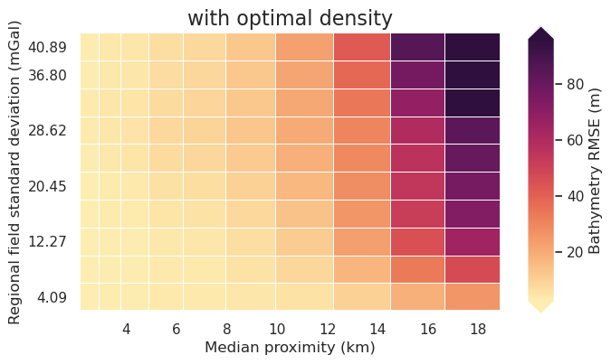
[48]:
fig = synth_plotting.plot_2var_ensemble(
sampled_params_df,
figsize=(6, 4),
x="median_proximity",
x_title="Median proximity (km)",
y="regional_stdev",
y_title="Regional field standard deviation (mGal)",
background="final_inversion_topo_improvement_rmse",
background_title="Topo improvement (m)",
background_cmap="cmo.balance_r",
background_cpt_lims=polar_utils.get_min_max(
sampled_params_df.final_inversion_topo_improvement_rmse,
robust=True,
absolute=True,
),
plot_contours=[0],
contour_color="black",
constrained_layout=False,
plot_title="with optimal density",
)
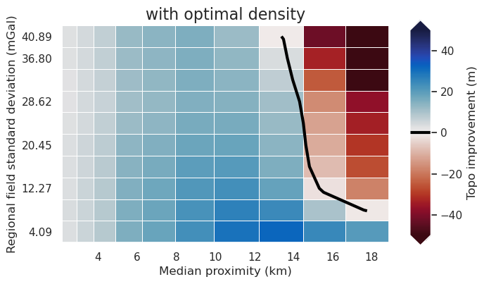
[49]:
fig = synth_plotting.plot_ensemble_as_lines(
sampled_params_df,
figsize=(6, 4),
x="median_proximity",
x_label="Median proximity (km)",
# x="constraints_per_10000sq_km",
# x_label="Constraints per $10000 km^2$",
y="final_inversion_topo_improvement_rmse",
y_label="Topo improvement (m)",
groupby_col="regional_stdev",
cbar_label="Regional gravity strength (mGal)",
horizontal_line=0,
)
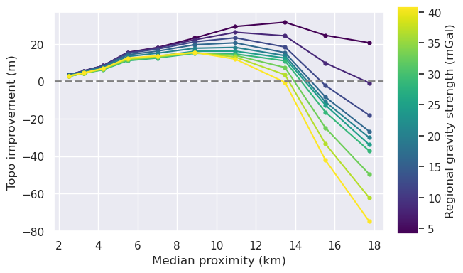
[50]:
fig = synth_plotting.plot_ensemble_as_lines(
sampled_params_df,
figsize=(4, 4),
x="regional_stdev",
x_label="Regional gravity strength (mGal)",
y="final_inversion_rmse",
y_label="Bathymetry RMSE (m)",
groupby_col="median_proximity",
cbar_label="Median proximity (km)",
# groupby_col="constraints_per_10000sq_km",
# cbar_label="Constraints per $10000 km^2$",
trend_line=True,
# slope_min_max=True,
# slope_mean=True,
)
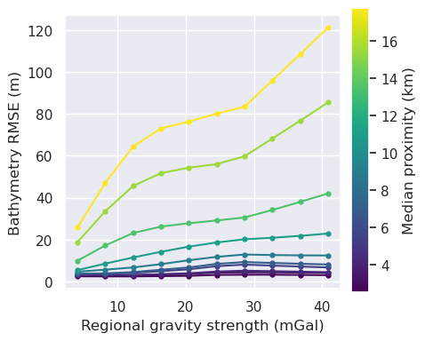
[51]:
fig = synth_plotting.plot_ensemble_as_lines(
sampled_params_df,
figsize=(4, 4),
x="regional_stdev",
x_label="Regional gravity strength (mGal)",
y="final_inversion_topo_improvement_rmse",
y_label="Topo improvement (m)",
groupby_col="median_proximity",
cbar_label="Median proximity (km)",
# groupby_col="constraints_per_10000sq_km",
# cbar_label="Constraints per $10000 km^2$",
trend_line=True,
horizontal_line=0,
# slope_min_max=True,
# slope_mean=True,
)
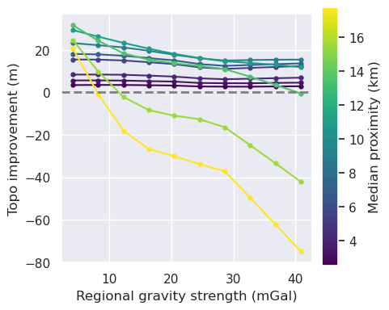
[52]:
metric = "median_proximity"
grids = []
names = []
for i, row in tqdm(sampled_params_df.iterrows(), total=len(sampled_params_df)):
# load saved inversion results
with pathlib.Path(f"{row.final_inversion_results_fname}_results.pickle").open(
"rb"
) as f:
topo_results, grav_results, parameters, elapsed_time = pickle.load(f)
final_bathymetry = topo_results.set_index(["northing", "easting"]).to_xarray().topo
grd = inside_bathymetry - final_bathymetry
grids.append(grd)
names.append(round(row[metric], 1))
raps_das = []
for i, g in enumerate(grids):
raps_das.append(
xrft.isotropic_power_spectrum(
g,
dim=["easting", "northing"],
# detrend='constant',
detrend="linear",
# window=False,
# nfactor=4,
# spacing_tol=0.01,
# nfactor=3,
truncate=False,
)
)
fig, ax = plt.subplots(figsize=(5, 3.5))
norm = plt.Normalize(
vmin=sampled_params_df[metric].min(),
vmax=sampled_params_df[metric].max(),
)
max_powers = []
max_power_wavelengths = []
for i, da in enumerate(raps_das):
ax.plot(
(1 / da.freq_r) / 1e3,
da,
label=names[i],
color=plt.cm.viridis(norm([names[i]])),
)
max_ind = da.idxmax()
max_power = da.max().to_numpy()
max_power_wavelength = 1 / (da[da == max_power].freq_r.to_numpy()[0]) / 1e3
max_power_wavelengths.append(max_power_wavelength)
max_powers.append(max_power)
ax.scatter(
x=max_power_wavelength,
y=max_power,
marker="*",
edgecolor="black",
linewidth=0.5,
color=plt.cm.viridis(norm(names[i])), # pylint: disable=no-member
s=60,
zorder=20,
)
# print(f"Max y value at x value: {max_power_wavelength}")
# ax.set_xscale("log")
ax.set_yscale("log")
ax.legend(title=metric, loc="center left", bbox_to_anchor=(1, 0.5))
ax.set_xlabel("Wavelength (km)")
ax.set_ylabel("Power ($m^3$)")
ax.set_title("Radially averaged PSD of inverted bed errors")
plt.tight_layout()
# ax.xaxis.set_major_formatter(mpl.ticker.StrMethodFormatter("{x:.1f}"))
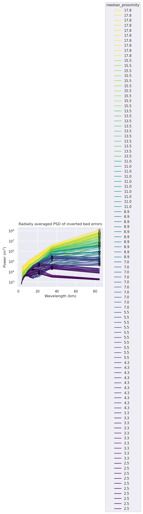
[53]:
y = max_power_wavelengths
x = names
m, b = np.polyfit(
x,
y,
1,
)
plt.scatter(
x,
y,
)
# plot y = m*x + b
plt.axline(xy1=(0, b), slope=m, label=f"$y = {m:.3f}x {b:+.3f}$")
plt.legend()
[53]:
<matplotlib.legend.Legend at 0x7f348c2307a0>
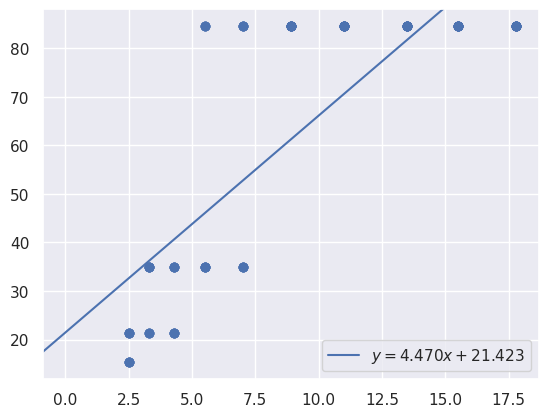